# Dies ist ein Kommentar
# Packages installieren install.packages('tidyverse')
# Diese Funktion müssen wir für alle noch nicht heruntergeladenen Packages
# anwenden. Weitere Packages im Skript: 'rempsyc', 'haven', 'car', 'effectsize'
# ,'psych', 'GGally', 'afex', 'emmeans', 'boot'
# Packages laden
library(tidyverse) # All-around package
library(rempsyc) # Convenience-functions für Psychologie
library(haven) # SPSS-Files (.sav) einlesen
library(car) # Anova
library(afex) # Anova
library(emmeans) # Post-hoc Tests
library(effectsize) # Effektstärkten
library(psych) # All-around package für Statistik
library(GGally) # Korrelationsmatrix
library(lm.beta) # Standardiertes Regressionsgewicht
library(flextable) # Tabelle in Word konvertieren
library(broom) # Für schöne lm-Tabelle
library(boot) # BootstrappingStatistik Leitfaden R
Vorwort
Dieser Leitfaden für statistische Datenanalyse in R soll als ergänzende Ressource zur Lehre an der Universität Graz dienen. Er richtet sich speziell an Studierende, die R für Bachelor- oder Masterarbeiten verwenden wollen, oder sich einfach mit den Grundlagen und Anwendungen statistischer Methoden in R vertraut machen möchten.
Ziel ist es, eine kompakte und verständliche Anleitung bereitzustellen, die das eigenständige Arbeiten mit R erleichtert. Ich erhebe keinen Anspruch auf absolute Richtigkeit oder Vollständigkeit der Inhalte. Der Leitfaden wird regelmäßig aktualisiert. Falls Ihnen Fehler auffallen oder Sie Verbesserungsvorschläge haben, freue ich mich über eine Rückmeldung per E-Mail (paul.sedlmayr@uni-graz.at).
Diese Seite ist noch nicht fertig gestellt.
Einführung
Installation & Laden von Packages
Im ersten Schritt installieren und laden wir Packages. Diese enthalten Funktionen, welche wir später nutzen werden. Wenn man ein Package, zum Beispiel das Package tidyverse, zum ersten Mal verwendet, muss man es mit der Funktion install.packages("tidyverse") installieren. Anschließend kann man es mit der Funktion library(tidyverse) laden. Bei install.packages() brauchen wir Anführungszeichen ““, bei bereits heruntergeladenen Packages (library()) nicht.
Um die Packages im folgenden Code zu installieren, entferne das # um den Kommentar #install.packages("tidyverse") zu einer Zeile Code zu verwandeln.
Warning
Um Teile aus dem folgenden Code zu nutzen, müssen die jeweiligen Packages heruntergeladen und geladen werden!
Wie funktionieren Funktionen
Die meisten Funktionen in R sind gut dokumentiert. Für eine funktion() können in R mit dem Kommando ?funktion die Dokumentation zur jeweiligen Funtion aufrufen. Alternativ kann man (rechts) unter “Help” eine Funktion suchen. Es ist lediglich zu beachten, dass eine Funktion aus einem externen Package (s. oben) zu erst über das Packafe geladen werden muss, um die Dokumentation einsehen zu können. Wenn wir die folgende Zeilen auskommentieren, können wir die Dokumention zur jeweiligen Funktion einsehen.
# ?library ?lm ?corGrundlegende Operatoren
Mit dem assignment operator <- kann man Variablen erstellen. Den Inhalt der Variable kann man ganz einfach einsehen, indem man den Namen der Variable in der Konsole / im Skript ausführt. Alternativ kann man die Funktion print() am jeweiligen Objekt verwenden. Die Funktion c() wird verwendet wenn wir einzelne Objekte zu einem Vektor zusammenfassen. Das ist besonders hilfreich, wenn wir z. B. gezielt mehrere Zeilen oder Spalten eines Dataframes auswählen wollen: df[c("Reihe_1", "Reihe_2"), c("Spalte_1", "Spalte_2")].
# Dies ist ein Kommentar
x <- 10 # oder x = 10
x[1] 10text_y <- "Hello"
text_z <- "WORLD"
# Print: um ein Objekt zu 'drucken'
print(text_y)[1] "Hello"text_y_z <- c(text_y, text_z)
text_y_z[1] "Hello" "WORLD"Der “Pipe-Operator” %>% aus dem tidyverse-Package wird verwendet, um eine Funktion an einem Objekt anzuwenden, ohne das Objekt in der Funktion stehen zu haben. In der herkömmlichen Variante ist es ein Objekt in den Klammern: “f(X)”. Hier liest sich “X %>% f()” wie “nimm X und mache f() damit. Obwohl das nichts am Output verändert, nutzen wir %>%, um eine Struktur im Code zu behalten. Dies ist speziell dann wichtig, wenn man mehrere Funktionen nacheinander anwendet.
Wenn wir beispielsweise eine Tabelle von Autos mtcars 1. nach der Variable mpg (miles per gallon) filtern wollen, 2. bestimmte Variablen auswählen wollen und 3. die Autos dann nach der Leistung (hp) ordnen wollen, brauchen wir nicht zwangsläufig 3 Zeilen Code dafür. Beide Herangehensweisen kommen zum selben Ergebnis
# 1. Normal
cars_filtered <- filter(mtcars, mpg > 20)
cars_selected <- select(cars_filtered, mpg, cyl, hp)
cars_final <- arrange(cars_selected, desc(hp))
# 2. Mit Pipe %>%
cars_final <- mtcars %>%
filter(mpg > 20) %>%
select(mpg, cyl, hp) %>%
arrange(desc(hp))
# Die ersten 3 Reihen anzeigen
head(cars_final, 3) mpg cyl hp
Lotus Europa 30.4 4 113
Mazda RX4 21.0 6 110
Mazda RX4 Wag 21.0 6 110Mathematische Operatoren
Man kann einfache Berechnungen mit Zahlen oder Vektoren durchführen. Mit eckigen Klammern kann man Positionen in einem Vektor auswählen / einsehen.
x^2[1] 100# Vector erstellen
vec_1 <- c(5, 10, 15)
vec_1[1] 5 10 15vec_1[1][1] 5vec_1[2][1] 10vec_1[3][1] 15vec_1 * 2[1] 10 20 30| Operation | Zeichen |
|---|---|
| Addition | + |
| Multiplikation | * |
| Division | / |
| Potenz | ^ |
Files einlesen
Um ein File einzulesen, müssen wir den Pfad des Files angeben. Befinden sich das Skript und File im selben Ordner, genügt für das csv-File “data_1.csv” der Pfad ".//data_1.csv". Um den Pfad zum File nicht händisch schreiben zu müssen, eignet es sich, mit einem Rechtsklick und “Pfad kopieren” den Link zu kopieren. Bei Problemen kann man im Fenster “Environment” (normalerweise rechts oben) auf “Import Dataset” gehen und ein File manuell einlesen.
# CSV-Datei einlesen
df <- read_csv("data_1.csv")Um SPSS Files mit dem Typ .sav einzulesen, kann man folgende Funktion aus dem haven-Package verwenden:
# SAV-Datei einlesen
df_sav <- read_sav(".//data_2.sav")Überblick verschaffen
Um sich einen Überblick über ein Datenfile zu verschaffen, eignen sich die folgenden Funktionen. Hinweis: $ wird verwendet, um eine Spalte auszuwählen.
# Ersten fünf Zeilen
head(df, 5)# A tibble: 5 × 21
Alter Bildungsstand Rauchen gender Herkunftsland Mathematiknote Statistiknote
<dbl> <dbl> <chr> <dbl> <dbl> <dbl> <dbl>
1 25 4 Nein 1 1 1 1
2 28 5 Nein 1 1 1 2
3 29 2 Ja 2 2 3 NA
4 23 4 Nein 1 1 4 5
5 25 5 Nein 1 2 5 4
# ℹ 14 more variables: wmsva14 <dbl>, Extraversion <dbl>, Neurotizismus <dbl>,
# Offenheit <dbl>, Gewissenhaftigkeit <dbl>, Verträglichkeit <dbl>, IQ <dbl>,
# BDI <dbl>, BDI_z2 <dbl>, BDI_c <dbl>, bedingung <chr>, correct_items <dbl>,
# confidence <dbl>, numerical_ability <dbl>colnames(df) [1] "Alter" "Bildungsstand" "Rauchen"
[4] "gender" "Herkunftsland" "Mathematiknote"
[7] "Statistiknote" "wmsva14" "Extraversion"
[10] "Neurotizismus" "Offenheit" "Gewissenhaftigkeit"
[13] "Verträglichkeit" "IQ" "BDI"
[16] "BDI_z2" "BDI_c" "bedingung"
[19] "correct_items" "confidence" "numerical_ability" summary(df$IQ) Min. 1st Qu. Median Mean 3rd Qu. Max.
79.00 92.50 97.25 96.99 101.62 119.00 table(df$bedingung)
Experimental Kontroll
46 52 Variablen Transformation
Variablen umbennen / umkodieren
# Variable umbenennen nach dem Schema: 'neu' = alt
df <- df %>%
rename(WMS4_delayed_recall = wmsva14)
# Variable transformieren: zu einem Faktor, d.h. Nominalskalenniveau
df$Bildungsstand <- df$Bildungsstand %>%
as_factor()
# Keine Angabe in Variable 'Rauchen' wird zu NA
df$Rauchen[df$Rauchen == "Keine Angabe"] <- NAOft wollen wir nominal skalierte Variablen zu Dummy-Variablen umkodieren. Beispielsweise wollen wir die Zugehörigkeit zur Kontroll- oder Experimentalbedingung numerisch zu 1 und 0 kodieren. Die Dummy-Variable erhält das Label experimentalgruppe mit den Ausprägungen 1 (ja \(\rightarrow\) gehört zur Experimentalgruppe) und 0 (nein \(\rightarrow\) gehört nicht zur Experimentalgruppe). Am besten wählt man ein informatives Label, also eines, welches den Namen der Referenzgruppe beinhaltet. Wenn wir die Variable nur gruppe nennen würden, wäre es nicht klar, welcher Wert zu welcher Gruppe gehört. ==check dummy coding==
# Rekodieren zu Dummy Variable
df$experimentalgruppe <- ifelse(df$bedingung == "Experimental", 1, ifelse(df$bedingung ==
"Kontroll", 0, NA_real_))z-Standardisierung & Zentrierung
mutate() wird häufig verwendet, um Variablen zu transformieren. Um eine z-standardisierte Variable (hier: BDI_z) aus der herkömmlichen Variable (hier: BDI) zu erstellen, subtrahieren wir den Wert vom Mittelwert (“zentrieren”) und teilen ihn durch die Standardabweichung (\(z_i = \frac{x_i - \bar x}{s}\)). Alternativ können wir auch die Funktion scale() verwenden.
df <- df %>%
mutate(BDI_z2 = ((BDI - mean(BDI))/sd(BDI)))In der Regression kann es sinnvoll sein, Werte zu zentrieren, um die Ergebnisse besser interpretieren zu können. Zentrieren bedeutet, wir verschieben die Punkte im Koordinatensystem. Das wird typischerweise am Mittelwert durchgeführt (\(x_{c,i}=x_i - \bar x\)).
df$BDI_c <- df$BDI - mean(df$BDI)Wide Format vs. Long Format
Das wide und long Format sind die häufigsten Strukturen von Datensätzen. Am besten erkennt man sie an den folgenden Kennzeichen: 1. Im wide Format hat jede Person eine Zeile 2. Im long Format hat jede Person mehrere Zeilen
Andere Statistikprogramme wie SPSS verwenden oft das wide Format. Im Folgenden lesen wir einen Datensatz ein. Dieser enthält die well-being Werte von Personen mit oder ohne Therapie zu drei Zeitpunkten. Der Datensatz ist im wide Format. Wir haben eine Zeile pro Person und drei Spalten für den Zeitpunkt.
df_2 <- read_csv(".//data_2.csv")
head(df_2)# A tibble: 6 × 7
participant_id therapy wellbeing_t0 wellbeing_t1 wellbeing_t2 therapy_group
<dbl> <dbl> <dbl> <dbl> <dbl> <chr>
1 1 0 58 49 54 no_therapy
2 2 1 25 52 40 cognitive-behav…
3 3 0 43 42 38 no_therapy
4 4 1 30 25 32 gestalt
5 5 1 29 30 37 gestalt
6 6 0 56 56 64 gestalt
# ℹ 1 more variable: gender <chr>Die Funktionen pivot_longer() und pivot_wider() aus dem tidyverse sind hierfür hilfreich. Wir konvertieren den Datensatz ins long Format, wo eine Person anschließend eine Zeile pro Zeitpunkt, also insgesamt drei, hat. Wir wollen die Werte aus den drei Spalten in einer Spalte vereinen (values_to = "wellbeing"). Dafür wählen wir die Spalten aus, welche die Werte enthalten (cols = c()). Zusätzlich erstellen wir eine neue Spalte, welche den Zeitpunkt kodiert (names_to = "time").
# Daten ins long-Format bringen: neue Spalte 'time' mit Zeitpunkt sowie
# 'wellbeing' mit Zellenwerten der alten Spalten
colnames(df_2) <- as.character(colnames(df_2))
df_2_long <- pivot_longer(data = df_2, cols = c("wellbeing_t0", "wellbeing_t1", "wellbeing_t2"),
names_to = "time", values_to = "wellbeing")
head(df_2_long)# A tibble: 6 × 6
participant_id therapy therapy_group gender time wellbeing
<dbl> <dbl> <chr> <chr> <chr> <dbl>
1 1 0 no_therapy female wellbeing_t0 58
2 1 0 no_therapy female wellbeing_t1 49
3 1 0 no_therapy female wellbeing_t2 54
4 2 1 cognitive-behavioral male wellbeing_t0 25
5 2 1 cognitive-behavioral male wellbeing_t1 52
6 2 1 cognitive-behavioral male wellbeing_t2 40Wenn wir die Daten nun zurück ins wide Format bringen wollen, geben wir die Spalte an, welche die unterschiedlichen Zeitpunkte kodiert (names_from = time). Zudem müssen wir die Spalte angeben, welche jene Werte enthält, die wir jetzt wieder auf drei Spalten aufteilen wollen (values_from = "wellbeing"). Wir können zusätzlich angeben, wie zusammen gehörende Werte identifiziert werden sollen, bzw.. welche Spalten unverändert bleiben sollen (id_cols = c("participant_id", "therapy", "therapy_group", "gender")). Wir sehen, dass diese Operation uns den Datensatz im ursprünglichen Zustand zurück gibt.
df_2_wide <- pivot_wider(data = df_2_long, names_from = "time", values_from = "wellbeing",
id_cols = c("participant_id", "therapy", "therapy_group", "gender"))
head(df_2_wide)# A tibble: 6 × 7
participant_id therapy therapy_group gender wellbeing_t0 wellbeing_t1
<dbl> <dbl> <chr> <chr> <dbl> <dbl>
1 1 0 no_therapy female 58 49
2 2 1 cognitive-behavioral male 25 52
3 3 0 no_therapy female 43 42
4 4 1 gestalt male 30 25
5 5 1 gestalt female 29 30
6 6 0 gestalt male 56 56
# ℹ 1 more variable: wellbeing_t2 <dbl>Aus einzelnen Participant-Files ein Gesamt-File erstellen
Wenn wir mit einem Programm wie PsychoPy arbeiten, wird für jeden Participant häufig eine separate Excel-Datei erzeugt. Eine zusammengeführter Dataframe liegt jedoch noch nicht vor und muss erst noch von uns erstellt werden. Wir gehen davon aus, dass sich alle .xlsx-Dateien im Ordner data befinden.
Warning
Dieser Ordner muss im gleichen Verzeichnis liegen wie das aktuelle R-Skript. Nur dann funktioniert der relative Pfad ./data korrekt. Ein häufiger Fehler entsteht durch falsch gesetzte Pfade – zur Kontrolle kann man per Rechtsklick auf den data-Ordner den vollständigen Pfad kopieren (siehe auskommentiertes Beispiel unten).
Der zentrale Trick: Wir nutzen lapply() und do.call(rbind, ...), um die Daten aus allen Dateien zeilenweise zu einem Dataframe zusammenzufügen.
# Ordnerpfad zu den Daten definieren
folder_data <- "./data" # ggf. Pfad anpassen!
# folder_data <- '/Users/deinname/Projekte/Experiment_X/data'
# Prüfen, ob der Datenordner existiert
if (!dir.exists(folder_data)) {
stop("Datenordner nicht gefunden: ", folder_data)
}
# Liste aller Excel-Dateien im Ordner erstellen
file_list <- list.files(path = folder_data, pattern = "\\.xlsx$", full.names = TRUE)
# Alle Dateien einlesen und in eine Liste speichern
data_list <- lapply(file_list, readxl::read_excel)
# Alle Participants zu einem gemeinsamen Dataframe kombinieren
df_combined <- do.call(rbind, data_list)Deskriptive Statistik
Wir können ganz einfach den Mittelwert und die Standardabweichung von einer Spalte berechnen.
mean(df$Gewissenhaftigkeit)[1] 29.99sd(df$Gewissenhaftigkeit)[1] 10.04384Um uns deskriptive Statistiken pro Gruppe ausgeben zu lassen, müssen wir group_by() verwenden.
descriptives <- df %>%
group_by(bedingung) %>%
summarize(M = mean(Gewissenhaftigkeit), SD = sd(Gewissenhaftigkeit), n = n(),
)
descriptives# A tibble: 3 × 4
bedingung M SD n
<chr> <dbl> <dbl> <int>
1 Experimental 29.8 10.6 46
2 Kontroll 29.7 9.35 52
3 <NA> 42 12.7 2Zudem bietet das psych-Package eine praktische Funktion:
describe(df$Extraversion) vars n mean sd median trimmed mad min max range skew kurtosis se
X1 1 100 30.01 10.01 31.5 30.05 11.12 6 57 51 -0.05 -0.56 1Statistische Verfahren
Die meisten Funktionen statistischer Verfahren sind folgendermaßen aufgebaut:
verfahren(Abhängige_Variable ~ Unabhängige_Variable, data = Datensatz).verfahren(Variable_A, Variable_B).
t-Test
t-Test über einen Mittelwert:
\(H_0: \mu = 100\)
t.test(df$IQ, mu = 100)
One Sample t-test
data: df$IQ
t = -4.0034, df = 99, p-value = 0.0001208
alternative hypothesis: true mean is not equal to 100
95 percent confidence interval:
95.49814 98.48186
sample estimates:
mean of x
96.99 t-Test über zwei unabhängige Stichproben:
Mit var.equal können wir angeben, ob Varianzhomogenität vorliegt. Wenn die Varianzen nicht homogen sind, verwenden wir den Welch’s t-Test, eine Version des t-Tests bei dem der Standardfehler nicht mit der gepoolten Varianz berechnet wird und die Freiheitsgrade (df) korrigiert sind: S. df = 90.395 ist keine ganze Zahl. Der Welch’s t-Test ist die Default-Einstellung bei t.test() für zwei unabhängige Stichproben, da dieser robuster gegenüber unterschiedlich großen Gruppengrößen und Varianzen ist.
\(H_0: \mu_1 = \mu_2\)
t.test(Gewissenhaftigkeit ~ bedingung, data = df, var.equal = FALSE)
Welch Two Sample t-test
data: Gewissenhaftigkeit by bedingung
t = 0.055123, df = 90.395, p-value = 0.9562
alternative hypothesis: true difference in means between group Experimental and group Kontroll is not equal to 0
95 percent confidence interval:
-3.925742 4.149823
sample estimates:
mean in group Experimental mean in group Kontroll
29.80435 29.69231 t-Test über zwei abhängige Stichproben:
\(H_0:\) Das well-being hat sich durch die Intervention nicht verändert.
t.test(df_2$wellbeing_t0, df_2$wellbeing_t1, paired = TRUE)
Paired t-test
data: df_2$wellbeing_t0 and df_2$wellbeing_t1
t = -6.2885, df = 119, p-value = 5.502e-09
alternative hypothesis: true mean difference is not equal to 0
95 percent confidence interval:
-8.316598 -4.333402
sample estimates:
mean difference
-6.325 Voraussetzungen t-Test
Statistische Voraussetzungen
Beim Testen der Voraussetzungen können wir entweder deskriptivstatistische oder inferenzstatistische Verfahren verwenden. Deskriptivstatistisch kann man die Verfahren mit Plots untersuchen (z.B. Residual Plots, QQ Plots). Inferenzstatistiche Verfahren werden mit Tests durchgeführt (z.B. Kolmogorov-Smirnov Test). Beide Herangehensweisen haben ihre Probleme: 1. Deskriptivstatistische Verfahren sind subjektiv 2. Inferenzstatistische Verfahren haben eine geringe Power in kleinen Stichproben, was dazu führt, dass sie Verletzungen nicht zeigen. In größeren Stichproben haben sie eine hohe Power und werden auch bei geringfügigen Verletzungen signifikant. Das ist ungünstig, da die Verletzungen vor allem in kleinen Stichproben relevant sind. In großen Stichproben und balancierten Designs sind Verfahren wie die ANOVA einigermaßen robust gegen einige der Verletzungen.
Ich persönlich würde die deskriptivstatistischen Verfahren empfehlen. Im Zweifel kann man diese in Kombination mit inferenzstatistischen Verfahren verwenden.
Was tun bei Verletzungen?
Verletzungen sollten immer transparent berichtet werden. Informiere dich darüber, wie sensibel das verwendete statistische Verfahren auf solche Verletzungen reagiert. Falls Korrekturen vorgenommen werden (z.B. robuste Tests, Transformationen), ist es sinnvoll, die Analyse mit und ohne Korrektur durchzuführen und beide Ergebnisse anzugeben. Ein robuster Effekt sollte sich unter beiden Bedingungen zeigen. Dies ist z.B. hilfreich, wenn unklar ist, ob Ausreißer das Ergebnis verzerren. Ergänzend können simulationsbasierte Verfahren wie Bootstrapping oder Randomization Tests eingesetzt werden. Diese reduzieren die Abhängigkeit von theoretischen Annahmen und können die Robustheit der Ergebnisse erhöhen.
Normalverteilung
Histogramm
Mit einem Histogramm pro Gruppe können wir die Annahme der Normalverteilung grob untersuchen.
df_bedingung <- df %>%
filter(!is.na(bedingung))
ggplot(data = df_bedingung, mapping = aes(x = Gewissenhaftigkeit)) + geom_histogram(bins = 20,
color = "black", fill = "steelblue") + facet_wrap(~bedingung) + labs(title = "Histogram",
y = "Häufigkeit")
QQ-Plot
Die Normalverteilung können wir mit QQ-Plots testen. Im QQ-Plots wird die Verteilung der Residuen der Stichprobe (durch Punkte gekennzeichnet) mit der Normalverteilung (Strich) verglichen. Die Gerade kennzeichnet eine perfekte Normalverteilung. Je stärker die Punkte von der Linie abweichen, desto stärker weichen die Daten von der Normalverteilung ab.
Im Fall des t-Tests, indem man traditionell nicht von Residuen spricht, kann man die Werte der Personen pro Gruppe plotten. Das Package Rempsyc eine praktische Funktion für QQ-Plots.
QQ-Plot für Gewissenhaftigkeit, für die Kontrol- und Experimentalbedingung
nice_qq(df_bedingung, variable = "Gewissenhaftigkeit", group = "bedingung", title = NULL)Varianzhomogenität
Diese müssen wir im Fall vom t-Test über zwei unabhängige Stichproben testen. Hier können wir den Levene’s Test verwenden. Dieser testet die \(H_0\), dass die Varianzen der Gruppen homogen sind. Ein signifikanter Wert deutet darauf hin, dass die Varianzen heterogen sind, also eine Verletzung der Annahme der Homoskedastizität.
leveneTest(Gewissenhaftigkeit ~ bedingung, data = df)Levene's Test for Homogeneity of Variance (center = median)
Df F value Pr(>F)
group 1 2.606 0.1097
96 Die t.test()-Funktion testet per default, ob die Varianzen homogen sind. Bei einer Verletzung wird automatisch der Welch-Test verwendet
Allgemein ist der t-Test ziemlich robust gegenüber Verletzungen der Voraussetzungen.
Varianzanalyse (ANOVA)
Klassischerweise wird für die ANOVA häufig die Funktion aov() verwendet. Im Folgenden werden wir jedoch das Package afex nutzen, da dies u.a. Vorteile bei unbalancierten Stichproben und bei Messwiederholung (Within-Subject) hat. Hier können wir die Funktion aov_ez() verwenden.
Diese Funktion benötigt allerdings eine Participant-ID (id =). Falls diese nicht vorhanden ist, können wir sie einfach hinzufügen, wenn es eine Zeile pro Participant gibt (wide Format). Wir zählen von 1 bis zur Gesamtanzahl der AV-Werte (df_2_wide$wellbeing_t2)) und fügen diese als participant hinzu. Gibt es einen Within-Subject Factor und die Daten sind im long Format ist das etwas komplizierter: bei einer Messwiederholung mit \(m\) Stufen bedeutet das \(m\) Zeilen pro Participant.
# ID Spalte pro Participant hinzufügen
df_2_wide$participant_id <- c(1:length(df_2_wide$wellbeing_t2))
# Between-UV's als Faktor konvertieren
df_2_wide$therapy_group <- df_2_wide$therapy_group %>%
as_factor()
df_2_wide$gender <- df_2_wide$gender %>%
as_factor()
df_2_wide$therapy <- df_2_wide$therapy %>%
as_factor()
df_2_long$gender <- df_2_long$gender %>%
as_factor()
df_2_long$therapy <- df_2_long$therapy %>%
as_factor()One Between
In R wird klassicherweise die Funktion aov() für die ANOVA verwendet. Da die Berechnung der Quadratsummen in aov() etwas anders geschieht als in anderen Programmen wie SPSS (Typ II vs. Typ III Quadratsummen), beschränke ich mich in diesem Skript auf die Funktion aov_ez() aus dem afex-Package.
Wir untersuchen, wie sich verschiedene Therapieformen – keine Therapie, kognitiv-behaviorale Therapie (CBT) und Gestalt-Therapie – auf das Well-Being auswirken. Zur Veranschaulichung einer ANOVA mit einem Between-Subjects-Faktor betrachten wir ausschließlich den Messzeitpunkt t2 und ignorieren die anderen Zeitpunkte (t0 und t1), die einen Within-Subjects-Faktor bilden würden. Die abhängige Variable ist somit wellbeing_t2.
Unter ges wird das Eta-Quadrat ausgegeben.
anova_bet <- aov_ez(id = "participant_id", dv = "wellbeing_t2", between = "therapy_group",
data = df_2_wide)
anova_betAnova Table (Type 3 tests)
Response: wellbeing_t2
Effect df MSE F ges p.value
1 therapy_group 2, 117 480.03 5.23 ** .082 .007
---
Signif. codes: 0 '***' 0.001 '**' 0.01 '*' 0.05 '+' 0.1 ' ' 1# Alternativ mit aov() aov(wellbeing ~ therapy, data = df_2_long)One Within
Für die ANOVA mit Messwiederholung (Within-Subject Factor) können wir die Funktion aov_ez() aus dem afex()-Package verwenden. Diese hat den Vorteil, dass sie bei Verletzung der Spherizität korrigierte Ergebnisse angibt. Im Folgenden Output wird darauf hingewiesen, dass nach einer Verletzung der Spherizität eine Greenhouse-Geisser-Korrektur angewandt wurde. Das können wir auch daran erkennen, dass die Freiheitsgrade keine ganzen Zahlen sind.
anova_within <- aov_ez(id = "participant_id", dv = "wellbeing", within = "time",
anova_table = list(es = "pes"), data = df_2_long)
anova_withinAnova Table (Type 3 tests)
Response: wellbeing
Effect df MSE F pes p.value
1 time 1.87, 222.44 83.11 42.74 *** .264 <.001
---
Signif. codes: 0 '***' 0.001 '**' 0.01 '*' 0.05 '+' 0.1 ' ' 1
Sphericity correction method: GG ggplot(df_2_long, aes(x = time, y = wellbeing, fill = time)) + geom_boxplot(alpha = 0.6,
outlier.color = "red", outlier.shape = 16) + labs(title = "Well-being über Zeit",
x = "Zeitpunkt", y = "Well-being Score") + theme_minimal() + theme(legend.position = "none") # Remove legendTwo Between
anova_2_bet <- aov_ez(id = "participant_id", dv = "wellbeing_t2", between = c("therapy_group",
"gender"), data = df_2_wide, anova_table = list(es = "pes"))
anova_2_betAnova Table (Type 3 tests)
Response: wellbeing_t2
Effect df MSE F pes p.value
1 therapy_group 2, 114 476.03 4.55 * .074 .013
2 gender 1, 114 476.03 2.13 .018 .148
3 therapy_group:gender 2, 114 476.03 0.89 .015 .414
---
Signif. codes: 0 '***' 0.001 '**' 0.01 '*' 0.05 '+' 0.1 ' ' 1# Alternativ mit aov() anova_result <- aov(wellbeing_t2 ~ gender *
# therapy_group, data = df_2_wide)Interaction Plot
Mit interaction.plot(UV_1, UV_2, AV) können wir einen Interaktions-Plot erstellen
interaction.plot(df_2_wide$therapy_group, df_2_wide$gender, df_2_wide$wellbeing_t2,
col = c("blue", "red"), lty = 1, lwd = 2, legend = TRUE, xlab = "Art der Therapie",
ylab = "Well-being zu Zeitpunkt 2", trace.label = "")
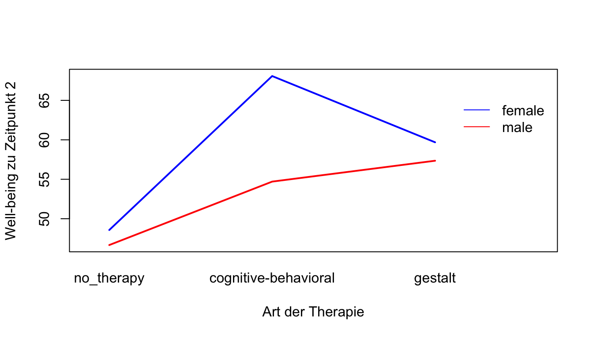
One Between, One Within (Mixed)
Für die ANOVA mit Messwiederholung (Within-Subject Factor) können wir wieder die Funktion aov_ez() verwenden. Diese hat den Vorteil, dass sie bei Verletzung der Spherizität automatisch korrigierte Ergebnisse angibt.
Hinweis: im folgenden Teil anova_table = list(es = "pes") geben wir mit "es = pes" das partielle Eta-Quadrat aud (\(\hat \eta_{par}^2\)). Wir können uns auch das generalisierte Eta-Quadrat (\(\hat \eta^2\)) ausgeben (es = "ges").
anova_mixed <- aov_ez(id = "participant_id", dv = "wellbeing", within = "time", between = "therapy_group",
data = df_2_long, anova_table = list(es = "pes"), include_aov = TRUE)
summary(anova_mixed)
Univariate Type III Repeated-Measures ANOVA Assuming Sphericity
Sum Sq num Df Error SS den Df F value Pr(>F)
(Intercept) 944166 1 124395 117 888.0403 < 2.2e-16 ***
therapy_group 4435 2 124395 117 2.0858 0.1288
time 6471 2 15504 234 48.8343 < 2.2e-16 ***
therapy_group:time 2983 4 15504 234 11.2549 2.277e-08 ***
---
Signif. codes: 0 '***' 0.001 '**' 0.01 '*' 0.05 '.' 0.1 ' ' 1
Mauchly Tests for Sphericity
Test statistic p-value
time 0.84931 7.6891e-05
therapy_group:time 0.84931 7.6891e-05
Greenhouse-Geisser and Huynh-Feldt Corrections
for Departure from Sphericity
GG eps Pr(>F[GG])
time 0.86904 2.305e-16 ***
therapy_group:time 0.86904 1.524e-07 ***
---
Signif. codes: 0 '***' 0.001 '**' 0.01 '*' 0.05 '.' 0.1 ' ' 1
HF eps Pr(>F[HF])
time 0.8810133 1.485331e-16
therapy_group:time 0.8810133 1.280591e-07interaction.plot(df_2_long$time, df_2_long$therapy_group, df_2_long$wellbeing, col = c("purple",
"orange", "green"), legend = TRUE, lwd = 2, xlab = "Zeit", ylab = "Well-being",
trace.label = "Therapie")Die Interaktionsplots können mit interaction.plot() leicht erstellt werden. Für detailliertere Grafiken bietet ggplot() allerdings deutlich mehr Optionen.
ggplot(df_2_long, aes(x = time, y = wellbeing, color = therapy_group, group = therapy_group)) +
stat_summary(fun = mean, geom = "point", size = 2) + stat_summary(fun = mean,
geom = "line") + stat_summary(fun.data = mean_se, geom = "errorbar", width = 0.2) +
labs(title = "Well-Being über Zeit in Abhängigkeit von der Therapie ", x = "Zeit",
y = "Well-Being")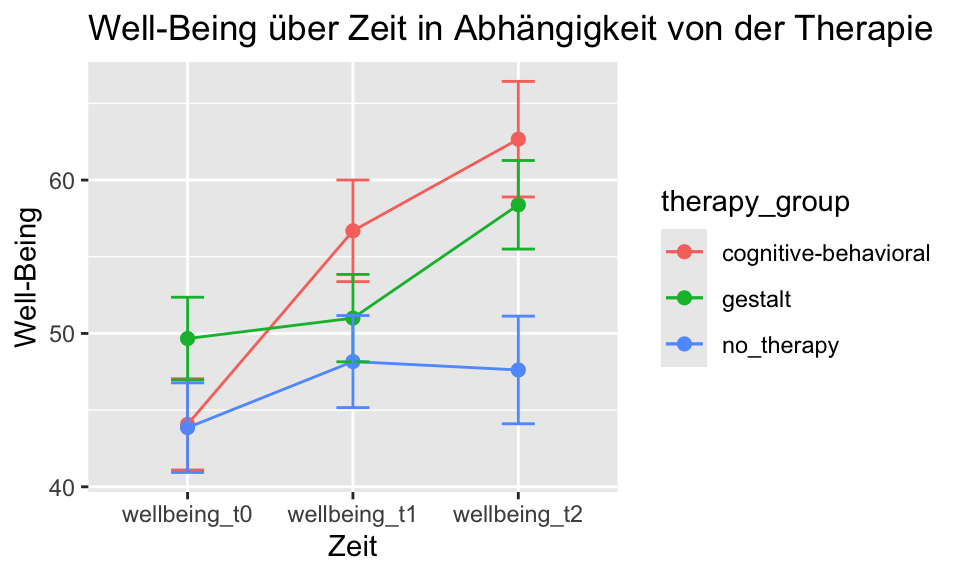
Effektgrößen
Das partielle Eta-Quadrat \(\hat \eta_{par}^2\) können wir aus den Ergebnissen der gerechneten Varianzanalyse berechnen. Hierfür können wir die eta_squared()-Funktion aus dem Package effectsize verwenden. Diese berechnet zusätzlich ein 95%-iges Konfidenzintervall. Mit dem Parameter partial = TRUE, bzw. generalized = TRUE können wir uns speziell für das partielle oder generalisierte Eta-Quadrat entscheiden.
effectsize::eta_squared(anova_mixed)# Effect Size for ANOVA (Type III)
Parameter | Eta2 (partial) | 95% CI
--------------------------------------------------
therapy_group | 0.03 | [0.00, 1.00]
time | 0.29 | [0.22, 1.00]
therapy_group:time | 0.16 | [0.09, 1.00]
- One-sided CIs: upper bound fixed at [1.00].Das Omega-Quadrat \(\hat \omega^2_{par}\) ist eine korrigierte Alternative zum Eta-Quadrat. Das partielle Eta-Quadrat ist positiv gebiased: unsystematische Zufallsvarianz wird zum Teil für systematische Effektvarianz gehalten. Daher wird das partielle Omega-Quadrat korrigiert und fällt idR. kleiner aus als das partielle Eta-Quadrat. Wenn \(\hat \omega^2_{par}\) negativ ausfällt, ist es auf 0.00 zu setzen.
omega_squared(anova_mixed)# Effect Size for ANOVA (Type III)
Parameter | Omega2 (partial) | 95% CI
----------------------------------------------------
therapy_group | 0.02 | [0.00, 1.00]
time | 0.04 | [0.01, 1.00]
therapy_group:time | 0.02 | [0.00, 1.00]
- One-sided CIs: upper bound fixed at [1.00].Geplante Vergleiche / Post-Hoc Tests
Geplante Kontraste
Anders als bei post-hoc Tests werden geplante Kontraste (Vergleiche) formuliert, bevor wir unsere Analysen rechnen bzw. die Daten begutachten. Das bedeutet, wir formulieren eine Hypothese und testen sie dann mit unseren Daten. Solche Erkenntnisse sind deutlich schwerer zu gewichten als Erkenntnisse, auf die wir bei Analyse der Daten explorativ stoßen. Geplante Kontraste sind im Prinzip wie ein t-Test. Wenn man mehr als zwei Gruppen vergleicht, kann man jedoch die unbekannte Populationsvarianz besser schätzen. Daher verfügen geplante Kontraste über eine höhere Power als wenn man alternativ nur einzelne t-Tests rechnen würde.
Wir untersuchen am Beispiel der Anova mit einem Between-Subject Factor die a-priori formulierte Hypothese, dass sich Personen mit Kognitiv-behavioraler Therapie von Patient*innen mit Gestalt-Therapie nach der Intervention (Zeitpunkt 2) unterscheiden, unabhängig von Patient*innen auf der Warteliste (ohne Therapie). Hierfür müssen wir die Mittelwerte mit Kontrastgewichten versehen. Zu erst erstellen wir die “Estimated Marginal Means” und schauen, wie die Levels unseres Faktors geordnet sind. Dadurch wissen wir, wie wir sie im nächsten Schritt gewichten müssen.
Wir gewichten den Mittelwert von Gruppe 2 (CBT) mit +1, den von Gruppe 3 (Gestalt) mit -1. Da uns Gruppe 1 (keine Therapie) in diesem Vergleich nicht interessiert, wird ihr Mittelwert mit 0 gewichtet. Wir können mit contrast() die Kontraste eines Faktors manuell überschreiben. Dem Vergleich von kognitiv-behavioraler Therapie vs. Gestalt-Therapie geben wir den Namen “CBT_vs_Gestalt” und legen die Gewichte wie beschrieben fest: c(0, 1, -1).
\(H_0: 0 \cdot \mu_{kontroll} + 1 \cdot \mu_{gestalt} - 1 \cdot \mu_{CBT} = 0\)
# One Between ANOVA
anova_bet <- aov_ez(id = "participant_id", dv = "wellbeing_t2", between = "therapy_group",
data = df_2_wide, anova_table = list(es = "pes"))
# Estimated marginal means
estimated_marginal_means <- emmeans(anova_bet, ~therapy_group)
estimated_marginal_means therapy_group emmean SE df lower.CL upper.CL
no_therapy 47.6 3.38 117 40.9 54.3
cognitive-behavioral 62.7 3.38 117 56.0 69.4
gestalt 58.4 3.65 117 51.2 65.6
Confidence level used: 0.95 levels(df_2_wide$therapy_group)[1] "no_therapy" "cognitive-behavioral" "gestalt" # Kontrast festlegen
contrast_custom <- contrast(estimated_marginal_means, method = list(CBT_vs_Gestalt_t2 = c(0,
1, -1)))
summary(contrast_custom) contrast estimate SE df t.ratio p.value
CBT_vs_Gestalt_t2 4.28 4.98 117 0.860 0.3918Mit der folgenden rempsyc-Funktion können wir uns für alle Kontraste, Cohen’s d ausgeben lassen und mittels Bootstrapping Konfidenzintervalle erstellen lassen. Diese sind allerdings nicht in Hinsicht auf Multiples Testen korrigiert und es werden alle möglichen Kontraste angegeben, also auch solche, die nicht unbedingt a-priori geplant wurden.
set.seed(100) # for reproducability
nice_contrasts(data = df_2_wide, response = "wellbeing_t2", group = "therapy_group",
effect.type = "cohens.d", bootstraps = 1000) Dependent Variable Comparison df t
1 wellbeing_t2 no_therapy - (cognitive-behavioral) 117 -3.1473290
2 wellbeing_t2 no_therapy - gestalt 117 -2.1642260
3 wellbeing_t2 (cognitive-behavioral) - gestalt 117 0.8596299
p d CI_lower CI_upper
1 0.002090484 -0.6868035 -1.1489937 -0.23961259
2 0.032479097 -0.4915571 -0.9191963 -0.07776868
3 0.391751002 0.1952464 -0.2544289 0.59530035Komplexe Kontraste
In komplexen Kontrasten vergleichen wir anders als bei paarweisen Vergleichen nicht eine Bedingung mir einer anderen, sondern beispielsweise eine Bedingung mit zwei anderen Bedingungen. Wir wollen untersuchen, ob sich Patient*innen auf der Warteliste, also ohne Therapie (Gruppe 1) von Personen unterscheiden, die in Therapie sind (Gruppen 2 & 3). Wir gewichten den Mittelwert von Gruppe 1 mit 1 und jene von Gruppen 2 & 3 mit jeweils -0.5. Auf beiden Seiten müssen die Werte gleich groß sein (1 vs. -(0.5+0.5)). Der Wert von 0.5 statt 1 sorgt dafür, dass die Mittelwerte von Gruppen 2 & 3 gemittelt werden (2 * 0.5 = 1). Das negative Vorzeichen bestimmt, welche Gruppe auf welcher Seite des Kontrasts steht. Welche Gruppe negativ bzw. positiv gewichtet wird, ist uns überlassen.
\(H_0: 1 \cdot \mu_1 - 0.5 \cdot \mu_2 + 0.5 \cdot \mu_3 = 0\)
anova_bet <- aov_ez(id = "participant_id", dv = "wellbeing_t2", between = "therapy_group",
data = df_2_wide, anova_table = list(es = "pes"))
contrast_matrix <- contrast(estimated_marginal_means, method = list(Waiting_list_vs_Therapy = c(1,
-0.5, -0.5)))
summary(contrast_matrix) contrast estimate SE df t.ratio p.value
Waiting_list_vs_Therapy -12.9 4.2 117 -3.075 0.0026Hinweis: es gibt eine alternative Version, um Kontrast mit der weit verbreiteten Funktion zur Varianzanalyse (aov()) zu rechnen: mit aov() \(\rightarrow\) contrasts() \(\rightarrow\) summary.lm().
Bonferoni
In der Bonferoni-Korrektur wird gegen Multiples Testen korrigiert, indem jeder p-Wert eines Vergleichs mit der Anzahl der Vergleiche multipliziert wird (\(N * p_j \leq \alpha'\)), oder alternativ dass das Signifikanzniveau \(\alpha\) durch die Anzahl der Vergleiche geteilt wird (\(p_j \leq \frac{\alpha'}{N}\)). Hier gilt daher: Je mehr Vergleiche wir durchführen, desto geringer muss ein Signifikanzniveau sein, um signifikant zu werden. Daher ist es sinnvoll, sich die Vergleiche genau zu überlegen und nicht alle möglichen Vergleiche zu rechnen.
Dadurch ist dieses Kriterium konservativer als beispielsweise die Tukey-Kramer Korrektur. Die einzelnen Hypothesen müssen allerdings nicht unabhängig sein.
Unter $contrasts werden die Vergleiche der einzelnen Stufen angegeben. Unter $emmeans bekommen wir die geschätzten Mittelwerte für jede Stufe.
# Bonferoni
anova_mixed <- aov_ez(id = "participant_id", dv = "wellbeing", within = "time", between = "therapy_group",
data = df_2_long, anova_table = list(es = "pes"), include_aov = TRUE)
emm_mixed <- emmeans(anova_mixed, ~therapy_group * time)
as.data.frame(emm_mixed) # Reihenfolge der Kontraste überprüfen therapy_group time emmean SE df lower.CL upper.CL
cognitive-behavioral wellbeing_t0 44.07143 2.820427 117 38.48572 49.65714
gestalt wellbeing_t0 49.66667 3.046409 117 43.63341 55.69992
no_therapy wellbeing_t0 43.85714 2.820427 117 38.27143 49.44285
cognitive-behavioral wellbeing_t1 56.69048 3.014171 117 50.72107 62.65988
gestalt wellbeing_t1 51.00000 3.255677 117 44.55230 57.44770
no_therapy wellbeing_t1 48.16667 3.014171 117 42.19726 54.13607
cognitive-behavioral wellbeing_t2 62.66667 3.380731 117 55.97131 69.36203
gestalt wellbeing_t2 58.38889 3.651607 117 51.15707 65.62071
no_therapy wellbeing_t2 47.61905 3.380731 117 40.92369 54.31441
Confidence level used: 0.95 In der vorliegenden Mixed ANOVA erhalten wir für jedes Level des Between-Subject Factors zu jedem Level des Within-Subject Factors den Estimated Marginal Mean. Nun wählen wir basierend auf der vorherigen Reihenfolge diejenigen aus, welche wir vergleichen wollen:
anova_mixed_contrasts <- contrast(emm_mixed, method = list(CBT_vs_Gestalt_t2 = c(0,
0, 0, 0, 0, 0, 1, -1, 0), Waiting_list_vs_Therapy_t2 = c(0, 0, 0, 0, 0, 0, 0.5,
0.5, -1)), adjust = "bonferroni")
summary(anova_mixed_contrasts) contrast estimate SE df t.ratio p.value
CBT_vs_Gestalt_t2 4.28 4.98 117 0.860 0.7835
Waiting_list_vs_Therapy_t2 12.91 4.20 117 3.075 0.0052
P value adjustment: bonferroni method for 2 tests Post-Hoc Tests
Tukey HSD
Die Tukey-Kramer-Korrektur ist ein Verfahren zur Kontrolle des Fehlerniveaus bei multiplen paarweisen Vergleichen von Faktorstufen, insbesondere im Rahmen von Post-hoc-Analysen nach einer signifikanten ANOVA. Die Korrektur schützt vor Multiplen Testen, indem sie die Signifikanzschwelle am größten möglichen Unterschied aller Gruppen orientiert – also an der extremsten Konstellation. Wenn beispielsweise der größte Unterschied zwischen CBT und keiner Therapie besteht, bemessen wir daran, wie hoch andere Unterschiede sein müssen, um signifikant zu werden. Im Vergleich zur Bonferroni-Korrektur oder zum Scheffe-Test ist die Power der Tukey-Korrektur höher, d.h., kleinere Effekte können eher erkannt werden. Ein weiterer Vorteil ist, dass die einzelnen Hypothesentests nicht unabhängig voneinander sein müssen.
emm_only_t2 <- emmeans(anova_mixed, ~therapy_group, at = list(time = "wellbeing_t2"))
pairs(emm_only_t2, adjust = "tukey") contrast estimate SE df t.ratio p.value
(cognitive-behavioral) - gestalt 4.28 4.98 117 0.860 0.6667
(cognitive-behavioral) - no_therapy 15.05 4.78 117 3.147 0.0059
gestalt - no_therapy 10.77 4.98 117 2.164 0.0817
P value adjustment: tukey method for comparing a family of 3 estimates Wir können auch einen Plot mit simultanen Konfidenzintervallen anzeigen lassen. Dabei handelt es sich um Konfidenzintervalle, die für multiples Testen korrigiert sind (family-wise). Hier auf Basis von Tukey’s Honest Significant Difference (HSD):
Hinweis: Im folgenden Beispiel verwenden wir nicht die aov_ez() Funktion mit emmeans() sondern die aov()-Funktion mit TukeyHSD(). Die genannten Funktionen stammen aus unterschiedlichen Packages und sind zum Teil nicht kompatibel.
aov_2_bet <- aov(wellbeing_t2 ~ therapy_group + gender, data = df_2_wide)
posthoc_tukey_2 <- TukeyHSD(aov_2_bet)
# Just for plotting
par(mar = c(5, 13.5, 4, 2))
plot(posthoc_tukey_2, las = 1)
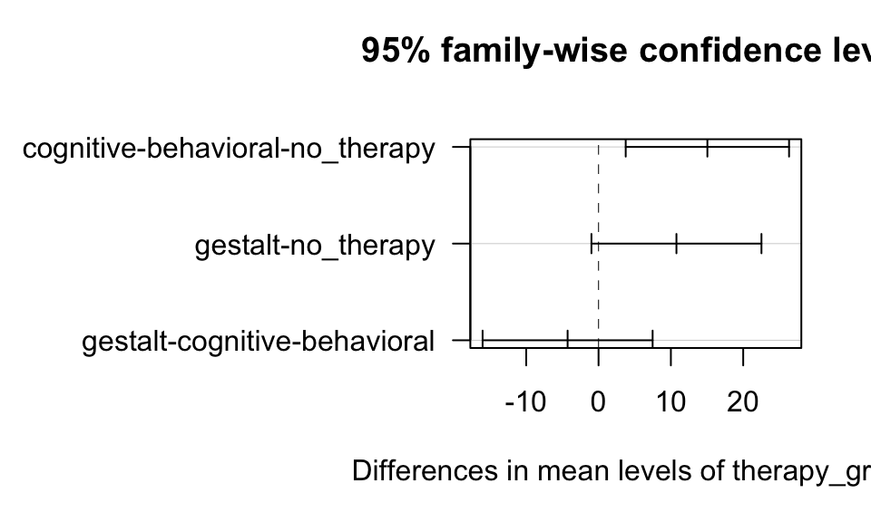
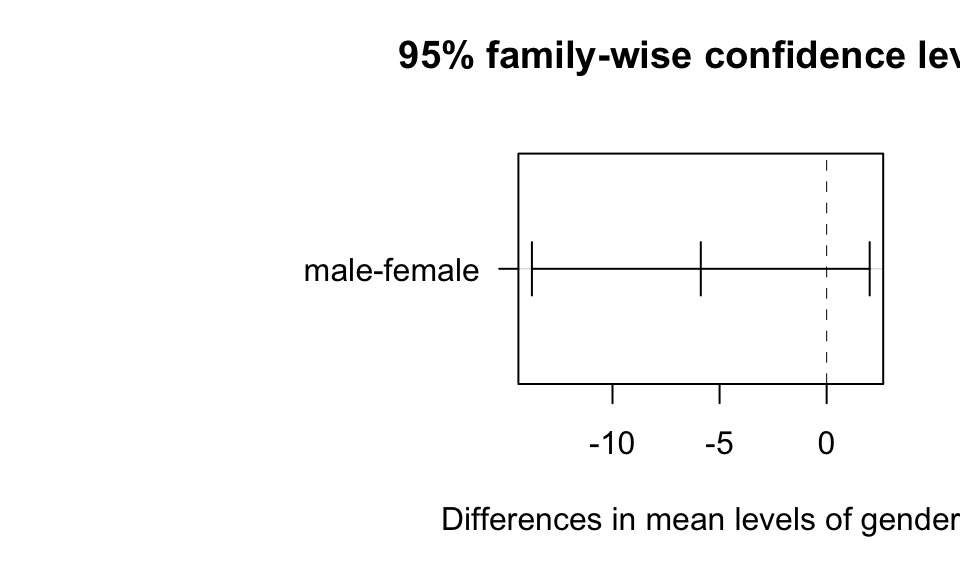
Scheffe Test
# Scheffe Post-Hoc Test
pairwise_scheffe <- emmeans(aov_2_bet, pairwise ~ therapy_group + gender, adjust = "scheffe")
pairwise_scheffe$emmeans
therapy_group gender emmean SE df lower.CL upper.CL
no_therapy female 50.6 3.92 116 42.8 58.4
cognitive-behavioral female 65.1 3.73 116 57.7 72.5
gestalt female 61.7 4.26 116 53.3 70.1
no_therapy male 44.6 3.92 116 36.9 52.4
cognitive-behavioral male 59.1 4.13 116 50.9 67.3
gestalt male 55.7 4.05 116 47.7 63.8
Confidence level used: 0.95
$contrasts
contrast estimate SE df
no_therapy female - (cognitive-behavioral female) -14.48 4.77 116
no_therapy female - gestalt female -11.10 4.96 116
no_therapy female - no_therapy male 5.97 4.01 116
no_therapy female - (cognitive-behavioral male) -8.51 6.48 116
no_therapy female - gestalt male -5.13 6.23 116
(cognitive-behavioral female) - gestalt female 3.38 4.99 116
(cognitive-behavioral female) - no_therapy male 20.45 5.98 116
(cognitive-behavioral female) - (cognitive-behavioral male) 5.97 4.01 116
(cognitive-behavioral female) - gestalt male 9.35 6.01 116
gestalt female - no_therapy male 17.07 6.52 116
gestalt female - (cognitive-behavioral male) 2.59 6.77 116
gestalt female - gestalt male 5.97 4.01 116
no_therapy male - (cognitive-behavioral male) -14.48 4.77 116
no_therapy male - gestalt male -11.10 4.96 116
(cognitive-behavioral male) - gestalt male 3.38 4.99 116
t.ratio p.value
-3.034 0.0307
-2.240 0.1767
1.487 0.5318
-1.314 0.6321
-0.823 0.8782
0.677 0.9276
3.417 0.0108
1.487 0.5318
1.555 0.4930
2.620 0.0822
0.383 0.9857
1.487 0.5318
-3.034 0.0307
-2.240 0.1767
0.677 0.9276
P value adjustment: scheffe method with rank 3 Voraussetzungen ANOVA
Statistische Voraussetzungen
Beim Testen der Voraussetzungen können wir entweder deskriptivstatistische oder inferenzstatistische Verfahren verwenden. Deskriptivstatistisch kann man die Verfahren mit Plots untersuchen (z.B. Residual Plots, QQ Plots). Inferenzstatistiche Verfahren werden mit Tests durchgeführt (z.B. Kolmogorov-Smirnov Test). Beide Herangehensweisen haben ihre Probleme: 1. Deskriptivstatistische Verfahren sind subjektiv 2. Inferenzstatistische Verfahren haben eine geringe Power in kleinen Stichproben, was dazu führt, dass sie Verletzungen nicht zeigen. In größeren Stichproben haben sie eine hohe Power und werden auch bei geringfügigen Verletzungen signifikant. Das ist ungünstig, da die Verletzungen vor allem in kleinen Stichproben relevant sind. In großen Stichproben und balancierten Designs sind Verfahren wie die ANOVA einigermaßen robust gegen einige der Verletzungen.
Ich persönlich würde die deskriptivstatistischen Verfahren empfehlen. Im Zweifel kann man diese in Kombination mit inferenzstatistischen Verfahren verwenden.
Was tun bei Verletzungen?
Verletzungen sollten immer transparent berichtet werden. Informiere dich darüber, wie sensibel das verwendete statistische Verfahren auf solche Verletzungen reagiert. Falls Korrekturen vorgenommen werden (z.B. robuste Tests, Transformationen), ist es sinnvoll, die Analyse mit und ohne Korrektur durchzuführen und beide Ergebnisse anzugeben. Ein robuster Effekt sollte sich unter beiden Bedingungen zeigen. Dies ist z.B. hilfreich, wenn unklar ist, ob Ausreißer das Ergebnis verzerren. Ergänzend können simulationsbasierte Verfahren wie Bootstrapping oder Randomization Tests eingesetzt werden. Diese reduzieren die Abhängigkeit von theoretischen Annahmen und können die Robustheit der Ergebnisse erhöhen.
Homoskedastizität (Varianzhomogenität)
Homoskedastizität ist die eine zentrale Annahme in der ANOVA: die Varianzen in den Gruppen sind gleich, bzw. ähnlich groß (“homogen”). Eine Verletzung der Homoskedastizität ist schwerwiegender wenn die Gruppen unterschiedlich groß sind.
Residual Plot
Um die Homoskedastizität zu überprüfen, erstellen wir einen Residual Plot. Die Residuen bezeichnen Abweichungen eines beobachteten Wertes vom vorhergesagten Wert. In der ANOVA ist das die Abweichung eines Wert \(y_{ij}\) vom jeweiligen Gruppenmittelwert \(\hat y_j\). Daher: \(e_{ij} = y_{ij} - \hat y_j\). Im folgenden Residual Plot für eine 2x3 ANOVA mit zwei Between-Subjects Factors haben wir sechs Untergruppen. Das zeigt sich in sechs verschieden “fitted” Values, also den jeweiligen Gruppenmittelwerten. Die Residuen sind als Abweichungen von den jeweiligen fitted Values zu sehen.
Wir wollen, dass die Varianz in allen Gruppen ähnlich groß ist. Daher schauen wir uns an, ob die Residuen ähnlich um 0 streuen. Zudem zeigt der Residual Plot potentielle Ausreißer.
anova_2_bet <- aov_ez(id = "participant_id", dv = "wellbeing_t2", between = c("therapy_group",
"gender"), data = df_2_wide, anova_table = list(es = "pes"))
# Extract residuals and fitted values
residuals <- residuals(anova_2_bet)
fitted_values <- fitted(anova_2_bet)
# Plot residuals against fitted values
plot(jitter(fitted_values), residuals, xlab = "Fitted Values", ylab = "Residuals",
main = "Residuals of Sub-Groups")
abline(h = 0, col = "red")
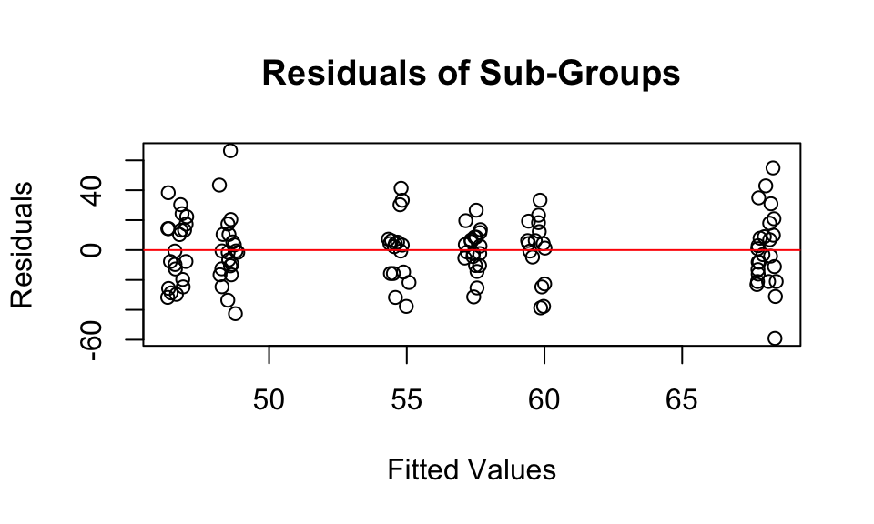
Siehe Figure 17 für einen Residual Plot in der Regression.
Levene’s Test
Alternativ können wir den Levene’s Test verwenden. Dieser testet die \(H_0\), dass die Varianzen der Gruppen homogen sind. Ein signifikanter Wert deutet darauf hin, dass die Varianzen heterogen sind, also eine Verletzung der Annahme der Homoskedastizität.
leveneTest(wellbeing_t2 ~ therapy_group * gender, data = df_2_wide)Levene's Test for Homogeneity of Variance (center = median)
Df F value Pr(>F)
group 5 0.9899 0.4272
114 Spherizität
Spherizität ist eine Erweiterung der Homoskedastizität bei Messwiederholungs-Designs (mit Within-Subject Factor). Die Spherizität beschreibt, dass die Varianz der Differenzen zwischen den Messzeitpunkten konstant ist. Ein einfaches Beispiel wäre der IQ gemessen im Alter von 17, 18 und 30 Jahren. Die Messungen im Alter von 17 und 18 Jahren würden sich deutlich weniger unterscheiden (=geringere Varianz der Differenzen) als beispielsweise bei 18 und 30 Jahren.
\(H_0 = \sigma^2_{y_1 - y_2} = \sigma^2_{y_1 - y_3} = \sigma^2_{y_2 - y_3}\)
\(H_1 = \sigma^2_{y_1 - y_2} \not = \sigma^2_{y_1 - y_3} \not = \sigma^2_{y_2 - y_3}\)
Wenn wir uns die summary() einer ANOVA mit aov_ez() ausgeben, sehen wir zunächst die nicht-korrigierten Ergebnisse. Darunter wird uns bei Mauchly Tests for Sphericity eine Verletzung der Spherizität angezeigt (\(p<.05\)). Es wird jeweils ein Greenhouse-Geisser und Huynh-Feldt Epsilon zur Korrektur angegeben. Wenn wir uns einfach nur das aov_ez()-ANOVA Objekt ausgeben lassen, sind die Ergebnisse bei Verletzung der Spherizität automatisch korrigiert: Die Freiheitsgrade des F-Tests sind mit dem Greenhouse-Geisser Epsilon multipliziert.
anova_within <- aov_ez(id = "participant_id", dv = "wellbeing", within = "time",
anova_table = list(es = "pes"), data = df_2_long)
summary(anova_within)
Univariate Type III Repeated-Measures ANOVA Assuming Sphericity
Sum Sq num Df Error SS den Df F value Pr(>F)
(Intercept) 946075 1 128830 119 873.888 < 2.2e-16 ***
time 6639 2 18487 238 42.737 < 2.2e-16 ***
---
Signif. codes: 0 '***' 0.001 '**' 0.01 '*' 0.05 '.' 0.1 ' ' 1
Mauchly Tests for Sphericity
Test statistic p-value
time 0.93003 0.013849
Greenhouse-Geisser and Huynh-Feldt Corrections
for Departure from Sphericity
GG eps Pr(>F[GG])
time 0.93461 1.159e-15 ***
---
Signif. codes: 0 '***' 0.001 '**' 0.01 '*' 0.05 '.' 0.1 ' ' 1
HF eps Pr(>F[HF])
time 0.948965 7.268579e-16anova_withinAnova Table (Type 3 tests)
Response: wellbeing
Effect df MSE F pes p.value
1 time 1.87, 222.44 83.11 42.74 *** .264 <.001
---
Signif. codes: 0 '***' 0.001 '**' 0.01 '*' 0.05 '+' 0.1 ' ' 1
Sphericity correction method: GG Normalverteilung
Tip
Die ANOVA ist einigermaßen robust gegen eine Verletzung der Normalverteilung, es sei denn die Verteilung ist in der Population sehr schief oder Gruppengrößen sind unterschiedlich groß. Hierbei ist es relevant, dass die Messwerte, bzw. Residuen, in den Gruppen normalverteilt sind, nicht die Daten allgemein (Stellen Sie sich bei drei Gruppen z.B. drei Normalverteilungen vor, die zum Teil überlappen. Die Daten wären nicht normalverteilt, in den Gruppen aber schon.)
Histogram
Mit einem Histogramm pro Gruppe können wir die Annahme der Normalverteilung grob untersuchen. Hierfür können wir die Residuen oder die Werte pro Gruppe verwenden.
ggplot(data = df_2_wide, mapping = aes(x = wellbeing_t2)) + geom_histogram(bins = 20,
color = "black", fill = "steelblue") + facet_wrap(~therapy_group) + labs(title = "Histogram",
y = "Häufigkeit")
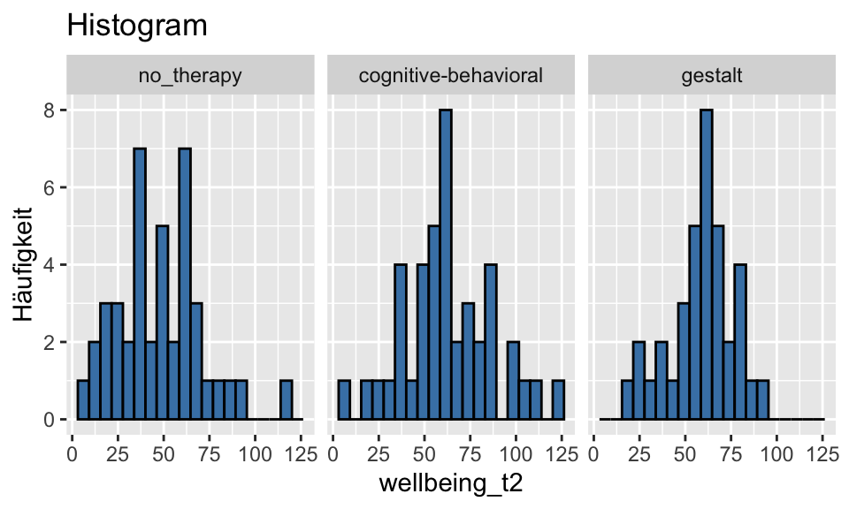
QQ-Plot
Die Normalverteilung können wir mit QQ-Plots testen. Im QQ-Plots wird die Verteilung der Residuen der Stichprobe (durch Punkte gekennzeichnet) mit der Normalverteilung (Strich) verglichen. Die Gerade kennzeichnet eine perfekte Normalverteilung. Je stärker die Punkte von der Linie abweichen, desto stärker weichen die Daten von der Normalverteilung ab.
# Wir haben die Residuen zuvor extrahiert: residuals <- residuals(anova_result)
df_2_wide$residual <- residuals
qqnorm(df_2_wide$residual, main = "QQ-Plot")
qqline(df_2_wide$residual)
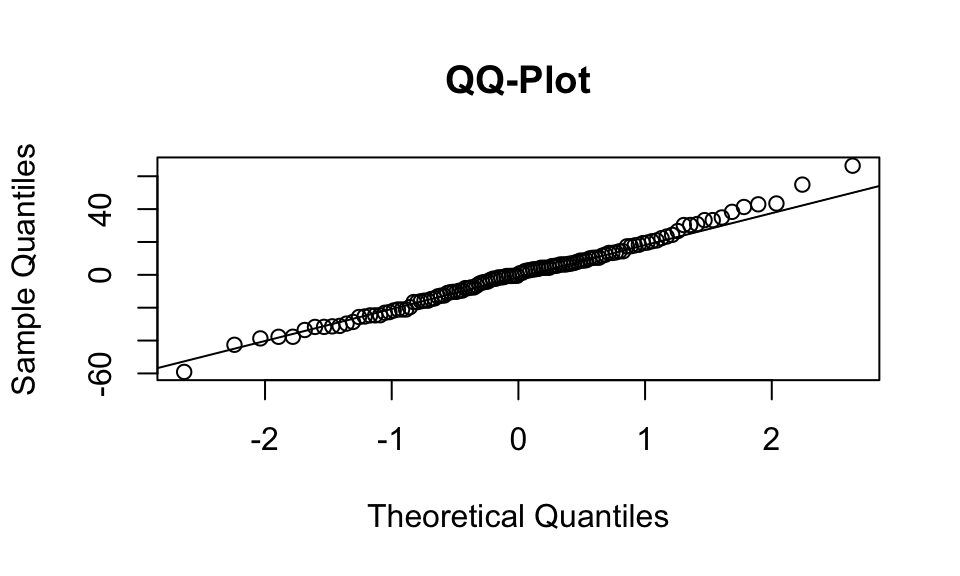
Das Package Rempsyc eine praktische Funktion für QQ-Plots. Hier können wir (bei Bedarf) auch einstellen, dass wir die Verteilungen der einzelnen Gruppen untersuchen wollen.
nice_qq(df_2_wide, variable = "residual", title = NULL)
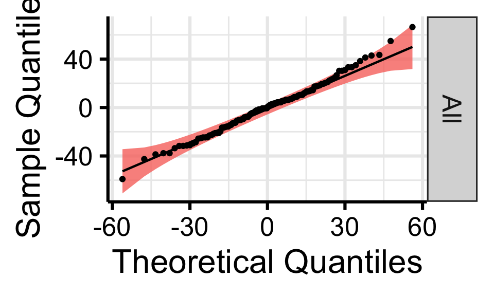
Shapiro Wilk Test
Zur Überprüfung der Normalverteilungsannahme der Residuen können wir auch einen inferenzstatistischen Test, wie den Shapiro-Wilk-Test, verwenden. Dabei testen wir, ob die Residuen innerhalb jeder Gruppe (nicht die abhängige Variable insgesamt!) signifikant von einer Normalverteilung abweichen.
shapiro.test(residuals)
Shapiro-Wilk normality test
data: residuals
W = 0.99267, p-value = 0.7831Unabhängigkeit der Residuen
Die Annahme der Unabhängigkeit ist verletzt, wenn sich systematische Abhängigkeiten in den Daten ergeben, die im Modell nicht berücksichtigt werden. Wenn Teilnehmende der kognitiv-behavioralen und Gestalt-Therapie aus unterschiedlichen Praxen rekrutiert wurden, könnten sich Clustereffekte ergeben – etwa durch unterschiedliche Therapeut*innen oder Standorte. Solche Abhängigkeiten führen zu korrelierten Residuen innerhalb der Cluster, was gegen die Unabhängigkeitsannahme verstößt.
Da sich Unabhängigkeit nicht direkt statistisch testen lässt, wird sie primär über das Studiendesign beurteilt. Bei Hinweisen auf Clusterbildung sind komplexere Mixed-Effects-Modelle geeigneter als die ANOVA.
Ausreißer
Ausreißer können das Ergebnis der ANOVA stark beeinflussen. Wir können den Residual Plot (Figure 8) oder Box-Plot (Figure 3) nutzen, um Ausreißer zu identifizieren.
Tip
Das Ausschließen von Ausreißern ist ein kontroverses Thema. Im Zweifel lohnt es sich, zu untersuchen ob der Effekt auch ohne Ausreißer oder in einem rang-basierten Verfahren besteht. Zudem kann Bootstrapping verwendet werden, um die Robustheit der Ergebnisse zu bestärken.
Korrelation
Mittels cor() können wir den Korrelationskoeffizienten berechnen. Im Parameter use können wir angeben, wie wir mit fehlenden Werten (NA) umgehen wollen.
cor(df$Extraversion, df$Neurotizismus, use = "complete.obs")[1] -0.3951064Mit cor.test() können wir auf Signifikanz testen. Zudem wird automatisch ein 95%-Konfidenzintervall ausgegeben
cor.test(df$Extraversion, df$Neurotizismus)
Pearson's product-moment correlation
data: df$Extraversion and df$Neurotizismus
t = -4.2578, df = 98, p-value = 4.738e-05
alternative hypothesis: true correlation is not equal to 0
95 percent confidence interval:
-0.5489247 -0.2154050
sample estimates:
cor
-0.3951064 cor_ex_neu <- cor.test(df$Extraversion, df$Neurotizismus, use = "complete.obs", method = "pearson")
r_value <- cor_ex_neu$estimate # Pearson-Korrelation (r)
p_value <- cor_ex_neu$p.value # p-value
ci_lower <- cor_ex_neu$conf.int[1] # Untere Grenze des 95% KI
ci_upper <- cor_ex_neu$conf.int[2] # Obere Grenze des 95% KIRangkorrelation
Im Parameter method können wir ebenfalls die Spearman-Korrelation und Kendall’s Tau auswählen, welche Rang-basiert sind.
cor.test(df$Extraversion, df$Neurotizismus, method = "spearman")
Spearman's rank correlation rho
data: df$Extraversion and df$Neurotizismus
S = 237928, p-value = 9.056e-06
alternative hypothesis: true rho is not equal to 0
sample estimates:
rho
-0.4277128 cor.test(df$Extraversion, df$Neurotizismus, method = "kendall")
Kendall's rank correlation tau
data: df$Extraversion and df$Neurotizismus
z = -4.3629, p-value = 1.283e-05
alternative hypothesis: true tau is not equal to 0
sample estimates:
tau
-0.3037607 Korrelationsmatrix
Es gibt verschiedene Möglichkeiten, eine Korrelations-Matrix oder Scatterplot-Matrix erstellen zu lassen:
- Die
cor()-Funktion mit mehreren Spalten eines Dataframes.
cor(df[, c("IQ", "numerical_ability", "WMS4_delayed_recall")], method = "pearson",
use = "pairwise.complete.obs") IQ numerical_ability WMS4_delayed_recall
IQ 1.0000000 0.2742733 0.1796224
numerical_ability 0.2742733 1.0000000 0.2233780
WMS4_delayed_recall 0.1796224 0.2233780 1.0000000ggpairs()aus demGGally-Package.
Hier können wir uns eine Hälfte der Matrix als Scatterplot Matrix ausgeben lassen (unter lower). Die method gibt hier an, ob die Regressionslinie gerade sein soll (method = "lm") oder eine “lokale”, daher nicht-gerade Regressionslinie (method = "loess"). Letzteres ist sinnvoll, um die Voraussetzung der Linearität überprüfen will. Zusätzlich kann man sich den Standardfehler der Regressionslinie angeben lassen (se = TRUE).
ggpairs(df, columns = c("IQ", "numerical_ability", "WMS4_delayed_recall"), lower = list(continuous = wrap("smooth",
method = "loess", se = TRUE)), upper = list(continuous = wrap("cor")))
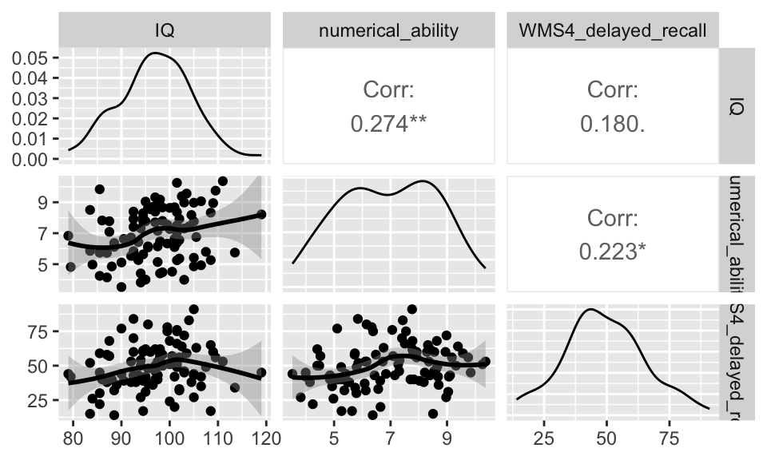
- Das
psych()-Package bietet eine ähnliche Funktion.
pairs.panels(df[, c("IQ", "numerical_ability", "WMS4_delayed_recall")], ellipses = F)
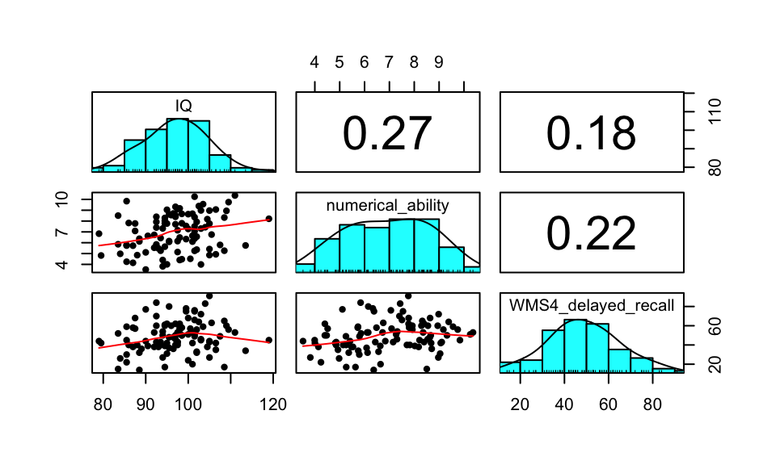
Regression
Einfache Lineare Regression
Die Syntax der Einfachen Linearen Regression ist im selben Schema wie zuvor: AV ~ UV. Über summary() können wir uns wieder die Ergebnisse ausgeben lassen.
Das unstandardisierte Regressionsgewicht von IQ ist unter Estimate zu finden. Daneben den zugehörigen Standardfehler, t-Wert und zugehörigen p-Wert. Das Multiple R-squared entspricht dem \(R^2\), der gesamten durch das Modell aufgeklärten Varianz.
model_simple_regression <- lm(IQ ~ WMS4_delayed_recall, data = df)
summary(model_simple_regression)
Call:
lm(formula = IQ ~ WMS4_delayed_recall, data = df)
Residuals:
Min 1Q Median 3Q Max
-17.5701 -4.4016 0.2258 4.4372 22.3459
Coefficients:
Estimate Std. Error t value Pr(>|t|)
(Intercept) 92.87477 2.39496 38.779 <2e-16 ***
WMS4_delayed_recall 0.08398 0.04646 1.808 0.0737 .
---
Signif. codes: 0 '***' 0.001 '**' 0.01 '*' 0.05 '.' 0.1 ' ' 1
Residual standard error: 7.434 on 98 degrees of freedom
Multiple R-squared: 0.03226, Adjusted R-squared: 0.02239
F-statistic: 3.267 on 1 and 98 DF, p-value: 0.07374Die standardisierten Regressionskoeffizienten, also der \(\beta\)-Koeffizient, werden leider nicht automatisch mit ausgegeben. Mit dem Package lm.beta können wir diese bekommen. In der einfachen linearen Regression sind diese identisch mit der Pearson-Korrelation. Die ist in der MLR nicht der Fall, es sei denn die Prädiktoren haben keine gemeinsame Varianz.
lm.beta(model_simple_regression)
Call:
lm(formula = IQ ~ WMS4_delayed_recall, data = df)
Standardized Coefficients::
(Intercept) WMS4_delayed_recall
NA 0.1796224 cor(df$IQ, df$WMS4_delayed_recall)[1] 0.1796224Wir können uns auch die Übersicht über das gesamte Model inkl. der standardisierten Regressionskoeffizienten unter Standardized ausgeben lassen:
summary(lm.beta(model_simple_regression))
Call:
lm(formula = IQ ~ WMS4_delayed_recall, data = df)
Residuals:
Min 1Q Median 3Q Max
-17.5701 -4.4016 0.2258 4.4372 22.3459
Coefficients:
Estimate Standardized Std. Error t value Pr(>|t|)
(Intercept) 92.87477 NA 2.39496 38.779 <2e-16 ***
WMS4_delayed_recall 0.08398 0.17962 0.04646 1.808 0.0737 .
---
Signif. codes: 0 '***' 0.001 '**' 0.01 '*' 0.05 '.' 0.1 ' ' 1
Residual standard error: 7.434 on 98 degrees of freedom
Multiple R-squared: 0.03226, Adjusted R-squared: 0.02239
F-statistic: 3.267 on 1 and 98 DF, p-value: 0.07374Wir können uns ganz einfach ein Konfidenzintervall für unser unstandardisiertes Regressionsgewicht angeben lassen:
confint(model_simple_regression) 2.5 % 97.5 %
(Intercept) 88.122037168 97.6274941
WMS4_delayed_recall -0.008219086 0.1761878Das Package rempsyc bietet nützliche Funktionen, um Ergebnis-Tabellen zu erstellen. Diese sind zum Großteil APA-konform. Ich rate jedoch, das Format bei Verwendung noch einmal zu überprüfen.
model_slr_results <- nice_lm(model_simple_regression)
model_slr_results[2] <- "WMS4 delayed recall" # WMS als Prädiktor
model_slr_results Dependent Variable Predictor df b t p
1 IQ WMS4 delayed recall 98 0.08398438 1.807571 0.07374123
sr2 CI_lower CI_upper
1 0.03226422 0 0.1004032model_slr_results <- nice_table(model_slr_results, title = c("Tabelle 1", "Zusammenhang von Gedächtnisfähigkeit (verzögerte Wiedergabe) und Intelligenz"),
note = c(paste("Diese Tablle ist als Beispiel gedacht. Alle Zusammenhänge sind frei erfunden.",
sep = " "), "* p < .05, ** p < .01, *** p < .001"))
# Um Tabelle als Word-Datei zu speichern
# flextable::save_as_docx(model_slr_results, path = 'model_slr_results.docx')
model_slr_resultsTabelle 1 | |||||||
|---|---|---|---|---|---|---|---|
Zusammenhang von Gedächtnisfähigkeit (verzögerte Wiedergabe) und Intelligenz | |||||||
Dependent Variable | Predictor | df | b | t | p | sr2 | 95% CI |
IQ | WMS4 delayed recall | 98 | 0.08 | 1.81 | .074 | .03 | [0.00, 0.10] |
Note. Diese Tablle ist als Beispiel gedacht. Alle Zusammenhänge sind frei erfunden. | |||||||
* p < .05, ** p < .01, *** p < .001 | |||||||
Multiple Lineare Regression
\[Y_i = \alpha + \beta_1 \cdot x_{i1} + \beta_2 \cdot x_{i2} + \beta_3 (x_{i1} \cdot x_{i2}) + \epsilon_i\]
Die Syntax für die MLR bleibt gleich: wir fügen weiter Prädiktoren (UVs) mit + ein, sowie eine Interaktion durch *.
model_mlr <- lm(IQ ~ numerical_ability + WMS4_delayed_recall + numerical_ability *
WMS4_delayed_recall, data = df)
model_mlr_stan <- summary(lm.beta(model_mlr)) # für standardisiertes Regressionsgewicht
model_mlr_stan
Call:
lm(formula = IQ ~ numerical_ability + WMS4_delayed_recall + numerical_ability *
WMS4_delayed_recall, data = df)
Residuals:
Min 1Q Median 3Q Max
-17.2927 -4.2766 -0.3574 4.7839 21.2556
Coefficients:
Estimate Standardized Std. Error t value
(Intercept) 101.56636 NA 11.45125 8.869
numerical_ability -1.17597 -0.26172 1.70302 -0.691
WMS4_delayed_recall -0.26905 -0.56999 0.24117 -1.116
numerical_ability:WMS4_delayed_recall 0.04855 0.95857 0.03494 1.390
Pr(>|t|)
(Intercept) 5.04e-14 ***
numerical_ability 0.492
WMS4_delayed_recall 0.267
numerical_ability:WMS4_delayed_recall 0.168
---
Signif. codes: 0 '***' 0.001 '**' 0.01 '*' 0.05 '.' 0.1 ' ' 1
Residual standard error: 7.275 on 93 degrees of freedom
(3 observations deleted due to missingness)
Multiple R-squared: 0.1088, Adjusted R-squared: 0.08009
F-statistic: 3.786 on 3 and 93 DF, p-value: 0.01302model_mlr_table <- tidy(model_mlr_stan)
colnames(model_mlr_table) <- c("Variable", "b", "β", "SE", "t", "p") # '\u03B2' kann statt β verwendet werden
model_mlr_table# A tibble: 4 × 6
Variable b β SE t p
<chr> <dbl> <dbl> <dbl> <dbl> <dbl>
1 (Intercept) 102. NA 11.5 8.87 5.04e-14
2 numerical_ability -1.18 -0.262 1.70 -0.691 4.92e- 1
3 WMS4_delayed_recall -0.269 -0.570 0.241 -1.12 2.67e- 1
4 numerical_ability:WMS4_delayed_recall 0.0486 0.959 0.0349 1.39 1.68e- 1Wir können uns ganz einfach das Konfidenzintervall zum unstandardisierten Regressionsgewicht ausgeben lassen:
confint(model_mlr) 2.5 % 97.5 %
(Intercept) 78.82644712 124.3062730
numerical_ability -4.55783587 2.2058863
WMS4_delayed_recall -0.74795511 0.2098634
numerical_ability:WMS4_delayed_recall -0.02083538 0.1179372nice_table(model_mlr_table, title = c("Tabelle 2", "Vorhersage der Intelligenz durch Gedächtnisfähigkeit (verzögerte Wiedergabe) und numerischen Fähigkeiten"),
note = c(paste("Diese Tablle ist als Beispiel gedacht. Alle Zusammenhänge sind frei erfunden.",
sep = " "), "* p < .05, ** p < .01, *** p < .001"))Tabelle 2 | |||||
|---|---|---|---|---|---|
Vorhersage der Intelligenz durch Gedächtnisfähigkeit (verzögerte Wiedergabe) und numerischen Fähigkeiten | |||||
Variable | b | β | SE | t | p |
(Intercept) | 101.57 | 11.45 | 8.87 | < .001*** | |
numerical_ability | -1.18 | -0.26 | 1.70 | -0.69 | .492 |
WMS4_delayed_recall | -0.27 | -0.57 | 0.24 | -1.12 | .267 |
numerical_ability:WMS4_delayed_recall | 0.05 | 0.96 | 0.03 | 1.39 | .168 |
Note. Diese Tablle ist als Beispiel gedacht. Alle Zusammenhänge sind frei erfunden. | |||||
* p < .05, ** p < .01, *** p < .001 | |||||
Beim Vorliegen von diskreten Prädiktoren verweise ich auf das Kapitel “MLR mit diskreten Prädiktor”.
Voraussetzungen Regression
Die folgende Abbildung zeit die Relevanz der Prüfung der Voraussetzungen in der Regression. Jeder der vier Datensätze verfügt über die selbe Regressionsgerade und \(R^2 = 0.67\). Links oben (\(y_1\)) ist keine der Voraussetzungen verletzt. Hier sind jedoch nicht alle Voraussetzungen abgebildet.

Ascombe’s Quartett auf Wikipedia
{kind=link}
Statistische Voraussetzungen
Beim Testen der Voraussetzungen können wir entweder deskriptivstatistische oder inferenzstatistische Verfahren verwenden. Deskriptivstatistisch kann man die Verfahren mit Plots untersuchen (z.B. Residual Plots, QQ Plots). Inferenzstatistiche Verfahren werden mit Tests durchgeführt (z.B. Kolmogorov-Smirnov Test). Beide Herangehensweisen haben ihre Probleme: 1. Deskriptivstatistische Verfahren sind subjektiv 2. Inferenzstatistische Verfahren haben eine geringe Power in kleinen Stichproben, was dazu führt, dass sie Verletzungen nicht zeigen. In größeren Stichproben haben sie eine hohe Power und werden auch bei geringfügigen Verletzungen signifikant. Das ist ungünstig, da die Verletzungen vor allem in kleinen Stichproben relevant sind. In großen Stichproben und balancierten Designs sind Verfahren wie die ANOVA einigermaßen robust gegen einige der Verletzungen.
Ich persönlich würde die deskriptivstatistischen Verfahren empfehlen. Im Zweifel kann man diese in Kombination mit inferenzstatistischen Verfahren verwenden.
Was tun bei Verletzungen?
Verletzungen sollten immer transparent berichtet werden. Informiere dich darüber, wie sensibel das verwendete statistische Verfahren auf solche Verletzungen reagiert. Falls Korrekturen vorgenommen werden (z.B. robuste Tests, Transformationen), ist es sinnvoll, die Analyse mit und ohne Korrektur durchzuführen und beide Ergebnisse anzugeben. Ein robuster Effekt sollte sich unter beiden Bedingungen zeigen. Dies ist z.B. hilfreich, wenn unklar ist, ob Ausreißer das Ergebnis verzerren. Ergänzend können simulationsbasierte Verfahren wie Bootstrapping oder Randomization Tests eingesetzt werden. Diese reduzieren die Abhängigkeit von theoretischen Annahmen und können die Robustheit der Ergebnisse erhöhen.
Homoskedastizität
Residual Plot
Ähnlich wie in der ANOVA können wir einen Residual Plot verwenden um die Homoskedastizität zu überprüfen (s. Figure 8). Die Residuen sind Abweichungen eines beobachteten Wertes von dem vorhergesagten Wert. In der Regression ist das die Abweichung eines Wert \(y_{i}\) vom bedingten Erwartungswert \(E(y_i | X_i = x_i)\). Konkret bedeutet das die Abweichung eines Werts von der Regressionsgeraden (in y). Die Regressionsgerade gibt an, welchen y-Wert wird basierend auf dem x-Wert erwarten würden (\(E(y_i | X_i = x_i)\)). Daher: \(e_{i} = y_{i} - \hat y_i\). Im nächsten Schritt standardisieren wir die Residuen. Hier können wir uns die standardisierten Residuen einfach ausgeben lassen rstandard(model_mlr).
Ist die Varianzhomogenität gegeben, streuen die Werte zufällig um null. In diesem Fall zeigt sich das darin, dass wir keine Muster in den Residuen erkennen. Eine Verletzung anderer Voraussetzungen (Linearität, Unabhängigkeit der Messwerte, Ausreißer) kann sich ebenfalls im Residual Plot zeigen.
# Extract standardized residuals and fitted values
residuals <- rstandard(model_mlr)
fitted_values <- fitted(model_mlr)
# Plot residuals against fitted values
plot(jitter(fitted_values), residuals, xlab = "Fitted Values", ylab = "Residuals",
main = "Residuals")
abline(h = 0, col = "red")
Hinweis: der Code für den obigen Residual Plot ist identisch zum Residual Plot der ANOVA (Figure 8).
Linearität
Um die Linearität zu überprüfen, können wir uns für die untersuchten Zusammenhänge Scatterplots mit lokalen Regressionslinien (“loess”) untersuchen. Hier ist es empfehlenswert, sich den Scatterplot aus beiden Richtungen ausgeben zu lassen (beide Variablen jeweils auf der x und y-Achse). Wir können die Funktion zur Korrelationsmatrix aus Figure 12 anpassen, um die obere Hälfte ebenfalls mit Scatterplots zu füllen.
Bei einer starken Verletzung oder bei non-linearen Zusammenhängen, können wir komplexere Verfahren (z.B. non-lineare Regression, quadratische Regression) verwenden.
ggpairs(df, columns = c("IQ", "numerical_ability", "WMS4_delayed_recall"), lower = list(continuous = wrap("smooth",
method = "loess", se = TRUE)), upper = list(continuous = wrap("smooth", method = "loess",
se = TRUE)))
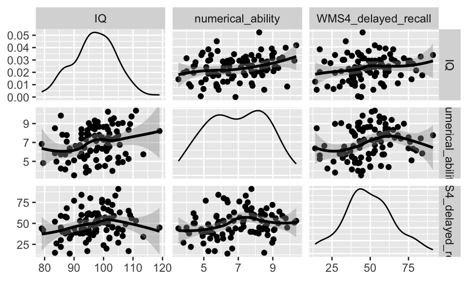
Normalverteilung der Residuen
Um die Normalverteilung der Residuen zu untersuchen, können wir wieder ein Histogramm und einen QQ-Plot der Residuen erstellen. Der Code ist wieder identisch zum QQ-Plot in der ANOVA (Figure 10).
# Wir extrahieren die residuen
residuals_mult_regression <- residuals(model_mlr)
qqnorm(residuals_mult_regression, main = "QQ-Plot")
qqline(residuals_mult_regression)
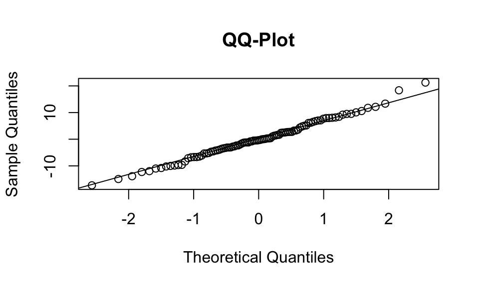
hist(rstandard(model_mlr))
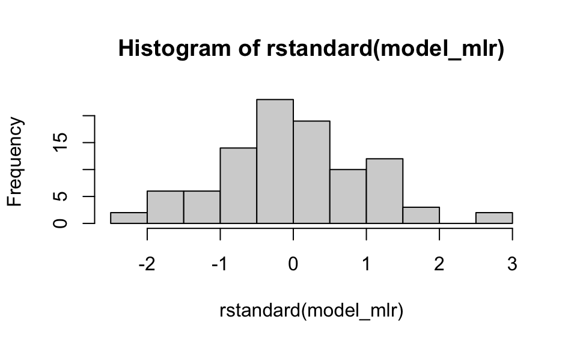
Alternativ können wir die Schiefe und Kurtosis der Residuen überprüfen. Bei Vorliegen der Normalverteilung sind diese Werte nahe Null. Die absoluten Werte sollten \(\leq 1\) sein. Die Kurtosis kann etwas höher ausfallen, sollte jedoch \(\leq 5\) sein.
Schiefe:
describe(residuals_mult_regression)$skew[1] 0.1736894Kurtosis:
describe(residuals_mult_regression)$kurtosis[1] 0.1136742Unabhängigkeit der Residuen
Das Regressionsmodell geht davon aus, dass die Fehler (Residuen) unkorreliert sind. Wenn diese korreliert sind, könnte in den Daten eine Beziehung vorliegen, welche wir im Modell nicht erfasst haben. Das würde dazu führen, dass wir verzerrte Standardfehler für unsere Regressionskoeffizienten erhalten. Insgesamt empfiehlt es sich, die Unabhängigkeit der Residuen visuell im Residuenplot (Figure 17) zu untersuchen. Wir wollen möglichst kein systematisches Muster erkennen.
Zusätzlich kann der Durbin-Watson Test verwendet werden, um die Abhängigkeit aufeinander folgender Residuen zu testen. Dieser testet die \(H_0\), ob eine Autokorrelation der Residuen vorliegt.
durbinWatsonTest(model_mlr) lag Autocorrelation D-W Statistic p-value
1 0.04231597 1.897991 0.542
Alternative hypothesis: rho != 0Ausreißer
Ausreißer können einen starken Einfluss auf die Regression haben (s. Figure 16). Wir können sie ebenfalls im Residual Plot (Figure 17) oder in einem Scatterplot (Figure 18) identifizieren. Alternativ können wir festgelegte Kriterien anwenden, beispielsweise Werte ausschließen, welche z.B. 3 Standardabweichungen vom Mittelwert entfernt sind.
# Mittelwert und Standardabweichung berechnen
mean_value <- mean(df$Alter)
sd_value <- sd(df$Alter)
# Absoluter Abstand mehr als 3 SD
df$outlier <- abs(df$Alter - mean_value) > (3 * sd_value)
# Optional: Visualize outliers
ggplot(df, aes(x = Alter, y = Offenheit)) + geom_point(aes(color = outlier), alpha = 0.6) +
scale_color_manual(values = c("black", "red"))
Multikollinearität
Multikollinearität ist nur relevant, wenn wir mehrere Prädiktoren verwenden. Multikollinearität liegt vor, wenn sich unsere Prädiktoren einen erheblichen Anteil an gemeinsamer Varianz teilen. Dies kann dazu führen, dass wir einen Effekte nicht mehr dem jeweiligen Prädiktor zuordnen können.
Zu erst sollten wir in einer Korrelationsmatrix überprüfen (s. Figure 12), wie sehr unsere Prädiktoren korreliert sind. Hohe Korrelationen sind ein Indikator für Multikollinearität.
Zudem können wir den Variance Inflation Factor (VIF) der Prädiktoren überprüfen. Dieser wird folgendermaßen berechnet: \(VIF_1 = \frac {1}{1- R^2_{1 \cdot 2 ... p}}\). 1 geteilt durch die Varianz im Prädiktor, welche nicht durch die andere Prädiktoren erklärt werden kann. Der VIF hat seinen Namen daher, dass er im Standardfehler des Regressionskoeffizienten enthalten ist und die Varianz, also auch den Standardfehler, in die Höhe treiben kann (“Inflation”). Dies kann dazu führen, dass wir Varianz im Modell aufklären können (\(R^2 \geq 0\)), aber keiner der Prädiktoren signifikant wird.
Häufig genannte Cutoff-Werte für den VIF sind \(\leq\) 5 und \(\leq\) 10. VIF \(\leq\) 5 gilt als gut, VIF \(\leq\) 10 gelten i.d.R. als okay.
vif_values <- vif(model_mlr, type = "predictor")
vif_values GVIF Df GVIF^(1/(2*Df)) Interacts With
numerical_ability 1 3 1 WMS4_delayed_recall
WMS4_delayed_recall 1 3 1 numerical_ability
Other Predictors
numerical_ability --
WMS4_delayed_recall -- Die Toleranz wird in SPSS zusätzlich zum VIF angegeben. Sie gibt den Nenner des VIF an und kann daher durch \(\frac{1}{VIF}\) ermittelt werden.
vif_values <- vif_values[1][[1]]
tolerance_values <- 1/vif_values[1]
vif_table <- data.frame(VIF = round(vif_values, 2), Toleranz = round(tolerance_values,
2))
nice_table(vif_table, title = c("Tabelle 3", "VIF und Toleranz"))Tabelle 3 | |
|---|---|
VIF und Toleranz | |
VIF | Toleranz |
1.00 | 1.00 |
1.00 | 1.00 |
Vorgehensweisen bei Multikollinearität
Beim Vorliegen von Multikollinearität können wir überlegen, Prädiktoren aus dem Modell zu entfernen oder mehrere Prädiktoren zu einem zusammenzufassen (z.B. Principal Component Analysis, PCA).
MLR mit diskretem Prädiktor
\[Y_i = \alpha + \beta_{1} \cdot D_{i} + \beta_2 \cdot X_1 + \beta_3 (D_i \cdot X_1) + \epsilon_i\]
Hierfür müssen wir sogenannte Dummy-Variablen (\(D_i\)) erstellen. Hat der diskrete Prädiktor zwei Ausprägungen, legen wir eine der Kategorien als Referenzkategorie fest. Die Referenzkategorie kann frei gewählt werden, wir müssen uns jedoch für die Interpretation merken, welche Ausprägung wir als Referenz festgelegt haben.
\(D_i = 0\): Person \(i\) gehört zur Referenzkategorie
\(D_i = 1\): Person \(i\) gehört nicht zur Referenzkategorie
Für die Referenzkategorie (\(D_i = 0\)), gilt:
\[\begin{align} Y_i &= \alpha + \beta_{1} \cdot 0 + \beta_2 \cdot X_1 + \beta_3 (0 \cdot X_1) + \epsilon_i \\ &= \alpha + \beta_2 \cdot X_1 + \epsilon_i \end{align}\]
[error: passt nicht zusammen]
# Rekodieren zu Dummy Variable
df$experimentalgruppe <- ifelse(df$bedingung == "Experimental", 1, ifelse(df$bedingung ==
"Kontroll", 0, NA_real_))model_dummy_regression <- lm(Extraversion ~ experimentalgruppe + Neurotizismus +
experimentalgruppe * Neurotizismus, data = df)
summary(model_dummy_regression)
Call:
lm(formula = Extraversion ~ experimentalgruppe + Neurotizismus +
experimentalgruppe * Neurotizismus, data = df)
Residuals:
Min 1Q Median 3Q Max
-22.6898 -5.8595 -0.0392 7.0103 24.4838
Coefficients:
Estimate Std. Error t value Pr(>|t|)
(Intercept) 41.71388 4.10540 10.161 < 2e-16 ***
experimentalgruppe 0.16651 6.01442 0.028 0.97797
Neurotizismus -0.36178 0.13056 -2.771 0.00674 **
experimentalgruppe:Neurotizismus -0.06386 0.18989 -0.336 0.73738
---
Signif. codes: 0 '***' 0.001 '**' 0.01 '*' 0.05 '.' 0.1 ' ' 1
Residual standard error: 9.371 on 94 degrees of freedom
(2 observations deleted due to missingness)
Multiple R-squared: 0.1625, Adjusted R-squared: 0.1357
F-statistic: 6.078 on 3 and 94 DF, p-value: 0.0007943# Add predicted values from the model
df$ex_predicted <- predict(model_dummy_regression, newdata = df)
# Plot mit zwei separaten Regressionslinien
ggplot(df, aes(x = Neurotizismus, y = Extraversion, color = factor(experimentalgruppe))) +
geom_point(alpha = 0.6) + # Scatter points
geom_line(data = df, aes(y = ex_predicted), linewidth = 1.2) + # Regression lines
scale_color_manual(values = c("blue", "red"), labels = c(0, 1)) +
labs(x = "Neurotizismus", y = "Extraversion", color = "experimentalgruppe") +
theme_minimal()
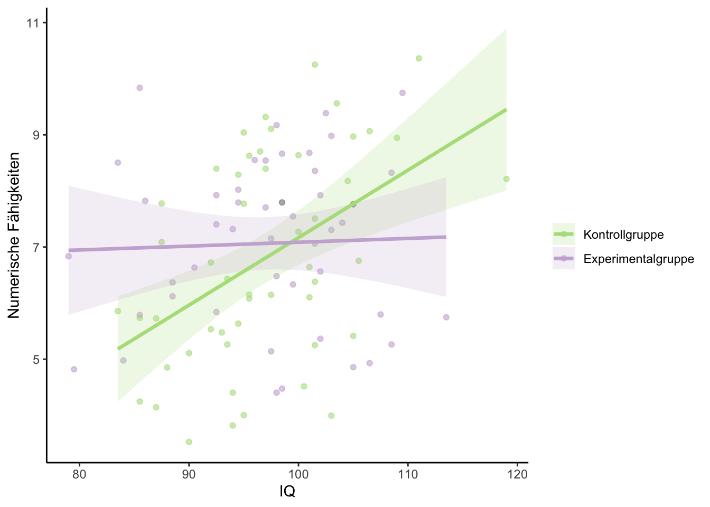
das Beispiel ergibt wenig Sinn evtl. auf gesamte Range anpassen
Quadratische Regression
Wenn zwischen Prädiktor und Kriterium ein U-förmiger Zusammenhang besteht, kann es sinnvoll sein, den quadrierten Prädiktor in das Modell aufzunehmen. Idealerweise ist ein solcher Zusammenhang a-priori formuliert und theoretisch begründet. Alternativ kann bei einer Verletzung der Linearitätsannahme auch explorativ geprüft werden, ob ein nicht-linearer Zusammenhang vorliegt. Non-lineare Zusammenhänge in der Stichprobe können auch zufallsbedingt sein. Daher ist es nicht immer sinnvoll, einen explorativ gefundenen non-linearen Zusammenhang als solchen zu interpretieren. Wir können theoretisch auch Prädiktoren höherer Ordnung (bsp. \(x_1^3\) oder \(x_1^4\)) ins Modell mit aufnehmen. In der Psychologie sind solche Zusammenhänge allerdings sehr selten und wir laufen Gefahr zu “overfitten”, also unsystematische Varianz als systematisch zu interpretieren.
Die folgende Scatterplot-Matrix zeigt, warum man die Linearität am besten aus beiden Perspektiven – also mit jeweils vertauschter x- und y-Achse – beurteilen sollte. Der U-förmige Zusammenhang zwischen der Leistung (correct_items) und dem Vertrauen in die eigene Kompetenz (confidence) wird in der Ansicht [1,3] mit correct_items auf der x-Achse deutlich klarer als in der Ansicht [3,1].
ggpairs(df, columns = c("correct_items", "IQ", "confidence"), lower = list(continuous = wrap("smooth",
method = "loess", se = TRUE)), upper = list(continuous = wrap("smooth", method = "loess",
se = TRUE)))Im statistischen Modell verwenden wir idR. den herkömmlichen Prädiktor (\(x_1\)) und seine quadratische Variante (\(x_1^2\)). Die Interpretation des quadratischen Regressionskoeffizienten ist nicht mehr intuitiv: diese geben normalerweise die Steigung an. Im quadratischen Prädiktor hängt die Steigung von der Position auf der x-Achse ab. Wenn \(\beta_3 > 0\), ist der non-lineare Zusammenhang U-förmig. Wenn \(\beta_3 < 0\), ist der non-lineare Zusammenhang umgekehrt-U-förmig (wie im folgenden Beispiel). Dies ist die selbe Logik wie bei Parabeln in der Mathematik (\(y = x^2\) vs. \(y = -x^2\))
\[Y_i = \alpha + \beta_1 \cdot x_{i1} + \beta_2 \cdot x_{i2} + \beta_3 \cdot x_{i1}^2 + \epsilon_i\]
model_mlr_squared <- lm(correct_items ~ confidence + IQ + I(confidence^2), data = df)
summary(lm.beta(model_mlr_squared))
Call:
lm(formula = correct_items ~ confidence + IQ + I(confidence^2),
data = df)
Residuals:
Min 1Q Median 3Q Max
-13.0540 -4.3895 -0.1755 3.3189 17.0304
Coefficients:
Estimate Standardized Std. Error t value Pr(>|t|)
(Intercept) -37.85467 NA 8.34827 -4.534 1.67e-05 ***
confidence 4.91374 1.05709 1.37373 3.577 0.000547 ***
IQ 0.60742 0.56395 0.08384 7.245 1.09e-10 ***
I(confidence^2) -0.46906 -0.98688 0.14002 -3.350 0.001156 **
---
Signif. codes: 0 '***' 0.001 '**' 0.01 '*' 0.05 '.' 0.1 ' ' 1
Residual standard error: 6.19 on 96 degrees of freedom
Multiple R-squared: 0.4334, Adjusted R-squared: 0.4157
F-statistic: 24.48 on 3 and 96 DF, p-value: 7.557e-12Auch, wenn sich das \(\beta_2\) des Prädiktors \(x_1^2\) nicht gut interpretieren lässt, können wir testen, wie sehr es den gesamt-Fit verbessert, also wie viel zusätzliche Varianz im Modell es erklärt. Hierfür vergleichen wir das \(R^2\) im Model mit Prädiktor und ohne Prädiktor. Siehe hierarchische Regression.
Hierarchische Regression
Wir können Prädiktoren in einer theoriegeleiteten Reihenfolge schrittweise in das Modell aufnehmen, um den zusätzlichen Beitrag eines neuen Prädiktors über die bereits enthaltenen Prädiktoren hinaus zu analysieren. Im folgenden Beispiel interessiert uns, ob der quadratische Term von confidence (also confidence²) den Modellfit signifikant verbessert, nachdem bereits confidence (linear) und IQ berücksichtigt wurden. Das sog. Full Model, also mit confidence², ist eine komplexere Version des Reduced Model.
Reduced Model: \(Y_i = \alpha + \beta_1 \cdot x_{i1} + \beta_2 \cdot x_{i2} + \epsilon_i\)
Full Model: \(Y_i = \alpha + \beta_1 \cdot x_{i1} + \beta_2 \cdot x_{i2} + \beta_3 \cdot x_{i1}^2 + \epsilon_i\)
model_red <- lm(correct_items ~ confidence + IQ, data = df)
summary(model_red)
Call:
lm(formula = correct_items ~ confidence + IQ, data = df)
Residuals:
Min 1Q Median 3Q Max
-13.7822 -4.0263 0.1971 3.3967 13.4070
Coefficients:
Estimate Std. Error t value Pr(>|t|)
(Intercept) -30.77834 8.49156 -3.625 0.000463 ***
confidence 0.47330 0.37944 1.247 0.215258
IQ 0.62771 0.08792 7.140 1.72e-10 ***
---
Signif. codes: 0 '***' 0.001 '**' 0.01 '*' 0.05 '.' 0.1 ' ' 1
Residual standard error: 6.508 on 97 degrees of freedom
Multiple R-squared: 0.3671, Adjusted R-squared: 0.3541
F-statistic: 28.14 on 2 and 97 DF, p-value: 2.308e-10model_full <- lm(correct_items ~ confidence + IQ + I(confidence^2), data = df)
summary(model_full)
Call:
lm(formula = correct_items ~ confidence + IQ + I(confidence^2),
data = df)
Residuals:
Min 1Q Median 3Q Max
-13.0540 -4.3895 -0.1755 3.3189 17.0304
Coefficients:
Estimate Std. Error t value Pr(>|t|)
(Intercept) -37.85467 8.34827 -4.534 1.67e-05 ***
confidence 4.91374 1.37373 3.577 0.000547 ***
IQ 0.60742 0.08384 7.245 1.09e-10 ***
I(confidence^2) -0.46906 0.14002 -3.350 0.001156 **
---
Signif. codes: 0 '***' 0.001 '**' 0.01 '*' 0.05 '.' 0.1 ' ' 1
Residual standard error: 6.19 on 96 degrees of freedom
Multiple R-squared: 0.4334, Adjusted R-squared: 0.4157
F-statistic: 24.48 on 3 and 96 DF, p-value: 7.557e-12Das \(\Delta R^2\) beträgt \(0.06\) (\(R^2_{Full} - R^2_{Red} = 0.433 - 0.367 = 0.066\)). Das bedeutet, dass das Full Model 6.6% mehr Varianz im Kriterium correct_items erklärt als das Reduced Model.
Wir verwenden die anova-Funktion um zu testen, ob der Fit durch das neue Modell signifikant besser ist. Diese misst mit dem aus der Anova bekannten Omnibus F-Test, ob die Verbesserung im Fit statistisch signifikant ist. Das Reduced Model und Full Model müssen hierfür “nested”, also verschachtelt, sein (das Full Model ist eine komplexere Version des Reduced Model).
anova(model_red, model_full)Analysis of Variance Table
Model 1: correct_items ~ confidence + IQ
Model 2: correct_items ~ confidence + IQ + I(confidence^2)
Res.Df RSS Df Sum of Sq F Pr(>F)
1 97 4108.8
2 96 3678.8 1 430.07 11.223 0.001156 **
---
Signif. codes: 0 '***' 0.001 '**' 0.01 '*' 0.05 '.' 0.1 ' ' 1Die Hinzunahme des quadratischen Terms von Vertrauen in die eigene Leistung verbessert die Vorhersage der korrekt gelösten Items signifikant über das hinaus, was durch IQ und den linearen Zusammenhang mit Vertrauen erklärt wird, \(\Delta R^2 = 0.06, F(1, 96) = 11.22, p = .001\).
Bootstrapping
Bootstrapping ist eine sogenannte Resampling-Methode. Das bedeutet, dass wir aus der vorliegenden Stichprobe zahlreiche neue Stichproben ziehen – und zwar mit Zurücklegen. Das heißt: Eine Person kann in einer neuen Stichprobe mehrfach oder gar nicht vorkommen.
Für jede dieser neuen Stichproben berechnen wir eine Statistik, zum Beispiel einen Mittelwert oder eine Effektgröße. Dadurch erhalten wir eine Verteilung dieser Statistik über alle resampleten Stichproben hinweg. Diese Verteilung erlaubt es uns, Aussagen über die Präzision der Parameterschätzung zu treffen.
In der Praxis wird häufig ein 95%-Konfidenzintervall für den interessierenden Parameter berechnet.
# Define function to compute F-statistic
boot_anova <- function(data, indices) {
sample_data <- data[indices, ] # Resample data
anova_result <- aov(wellbeing_t2 ~ therapy_group, data = sample_data)
return(summary(anova_result)[[1]]["therapy", "F value"]) # Extract F-value
}
# Apply bootstrapping with 1000 resamples
boot_result_anova <- boot(df_2_wide, statistic = boot_anova, R = 1000)
# View bootstrapped F-distribution
print(boot_result_anova)
ORDINARY NONPARAMETRIC BOOTSTRAP
Call:
boot(data = df_2_wide, statistic = boot_anova, R = 1000)
Bootstrap Statistics :
original bias std. error
t1* 5.22941 1.117851 3.705642Weitere Ressourcen für R
| Thema | Beschreibung |
|---|---|
| R for Data Science | Einführung in Datenanalyse mit dem tidyverse |
| Learning Statistics with R | Statistik-Tutorial für Psychologie-Studierende |
Data Transformation mit dplyr |
Cheatsheet zur Datenmanipulation |
Data Tidying mit tidyr |
Cheatsheet zum Aufräumen von Daten |
| Data Import mit dem tidyverse | Cheatsheet zum Einlesen von Daten |
Faktoren mit forcats |
Cheatsheet zum Umgang mit kategorialen Variablen |
Notes & footnotes
- auf type 3 sum of squares eingehen?
- long format
- evtl. darauf eingehen wie man bei MW eine ID hinzufügt
- geplante Kontraste theoretische Fundierung
- scheffe